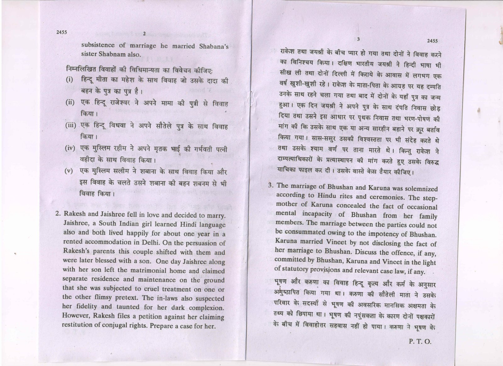
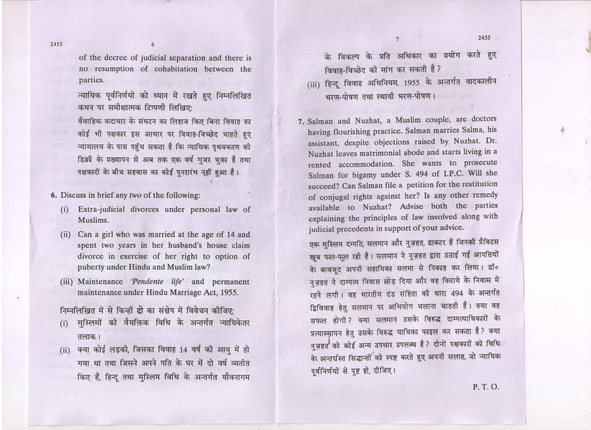
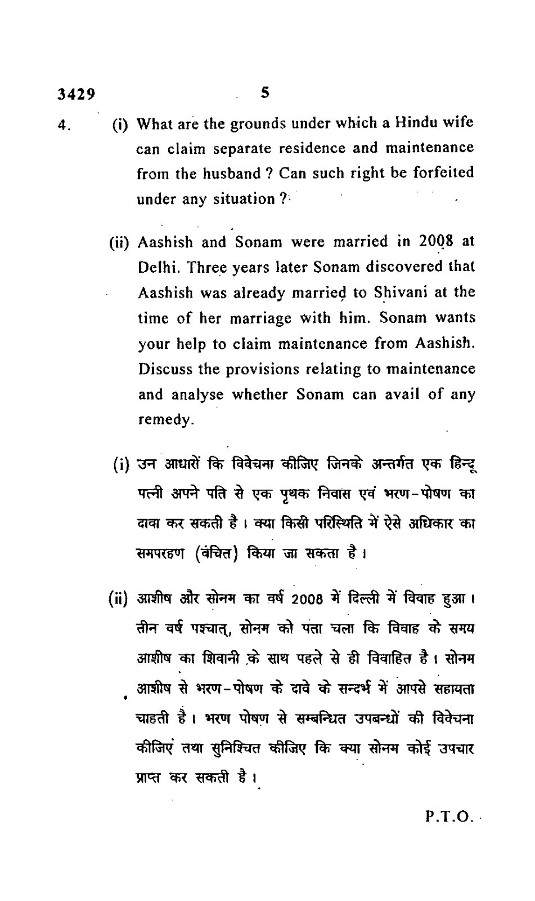
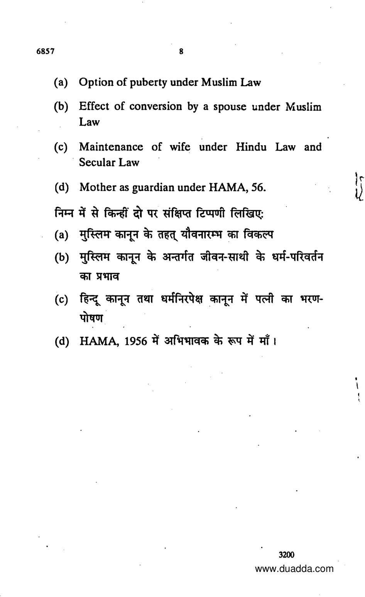
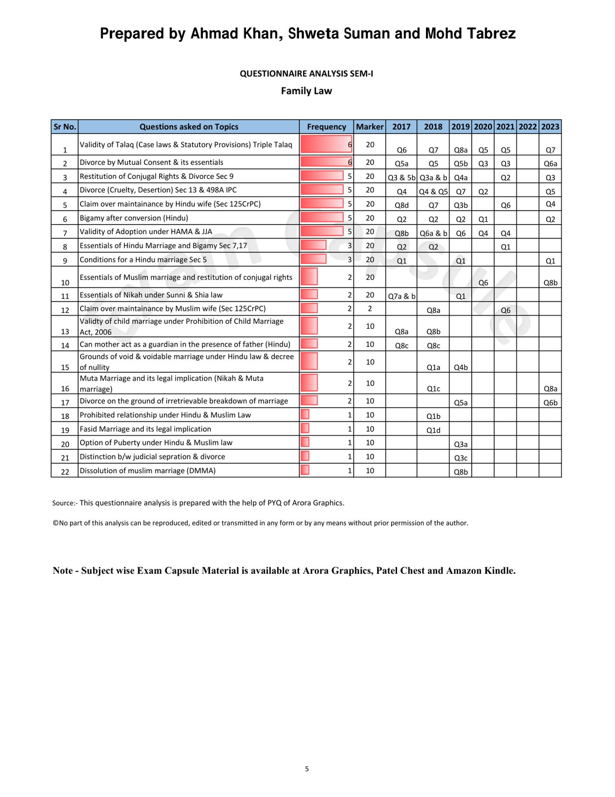

Who may apply under HMA section 24?
Either spouse.Section 24 is gender-neutral; insufficient independent income for support and necessary proceeding expenses is the central financial condition.
A detailed study of financial support, statutory rights and judicial principle. Built primarily from your DU case material, with source-traced questions and full model answers.
Clause-by-clause statutes, full case reasoning and structured application. The source compass explains what is in the uploaded DU material—and what needed a clearly labelled supplement.
Recovered wording, unverified sitting labels and capsule-only topic references are kept distinct. Inspect the evidence →
How this edition uses your DU material, identifies the missing extract and distinguishes verified questions from topic metadata.
This guide follows Unit III: Maintenance under Hindu Law in the supplied University of Delhi LB–105, Family Law–I, January 2023 case material. Its centre of gravity is the prescribed DU material—not a generic family-law outline. The unit contains four statutory routes and four prescribed cases. Read the statutory route before learning its case: the same woman may qualify under one enactment and fail under another.
The uploaded project contains a PYQ analysis table, but no complete original semester-paper collection. This edition therefore separates: (A) questions reproduced in official DU material; (B) questions readable in older DU reprints or third-party archival scans, with provenance warnings; and (C) topic-only entries in the uploaded capsule. Every readable question included has a linked model answer. Unavailable question wording, dates and marks have not been invented.
| Core item in the supplied syllabus | Treatment in this guide | Necessary connected provisions |
|---|---|---|
| Hindu Marriage Act, 1955: sections 24 and 25 | Clause-wise explanation; eligibility, quantum, procedure, conduct, modification and enforcement | Sections 2, 19, 21, 22, 26, 28 and 28A; limited links to sections 9, 13 and 23 for integrated problems |
| Hindu Adoptions and Maintenance Act, 1956: section 18 | Lifetime marital obligation; every surviving ground of separate residence; disqualifications | Sections 2, 3(b), 4 and the maintenance scheme in sections 19–28, particularly sections 20 and 23 |
| Code of Criminal Procedure, 1973: section 125 | Every subsection, explanation and proviso; wife, children and parents; defences and enforcement | Sections 126–128; separately labelled BNSS succession note |
| Protection of Women from Domestic Violence Act, 2005 | Full section-map, sections 1–37, with substantial treatment of definitions, economic abuse, procedure and reliefs | Especially sections 2, 3, 12, 17–23, 25–29, 31–32 and 36 |
“All provisions” here means the provisions of this maintenance unit and its connected machinery. It does not mean reproducing unrelated adoption formalities, the entire criminal procedure code, or every ground of divorce. DU23 · syllabus, PDF p.3
| Prescribed authority | Uploaded DU location | Source position |
|---|---|---|
| Amar Kanta Sen v. Sovana Sen, AIR 1960 Cal 438 | Printed pp.178–180; PDF pp.186–188 | Judgment extract available; detailed brief is based on it |
| D. Velusamy v. D. Patchaiammal, (2010) 10 SCC 469 | Printed pp.181–187; PDF pp.189–195 | Judgment extract available; detailed brief is based on it |
| Badshah v. Sou. Urmila Badshah Godse & Anr., (2014) 1 SCC 188 | Printed pp.188–195; PDF pp.196–203 | Judgment extract available; detailed brief is based on it |
| Padmja Sharma v. Ratan Lal Sharma, AIR 2000 SC 1398; (2000) 4 SCC 266 | Listed in the syllabus at PDF p.3; no judgment extract in the uploaded volume | The missing brief is supplied from the Supreme Court judgment reproduced on Indian Kanoon, expressly labelled as a supplement |
The DU volume's printed text begins eight PDF pages after the cover: printed page + 8 = PDF page for the case extracts cited here. The book moves from Badshah at printed p.195 directly to the next unit at p.196. The absence of Padmja is therefore a genuine source gap, not a reason to omit a prescribed case. DU23 · PDF pp.3, 186–204 Padmja · supplement · judgment, especially concluding maintenance directions
For a first reading, follow the chapters in order. For an examination, begin with the comparison table and the model corresponding to the question. For final revision, use the decision trees, numerical case outcomes, statutory deadlines and error-checklist. Full explanations remain available throughout; the shorter revision devices are not substitutes for them.
Four routes, different statutory gateways. Build the conceptual map before learning the sections and cases.
Maintenance is a legally enforceable provision for support. It is not limited to keeping a claimant barely alive; its content depends on the enactment, the parties' resources, reasonable needs and the relevant standard of living. Under HAMA section 3(b) it includes:
The definition is inclusive. It is important in its own Act and, as Padmja Sharma illustrates, can help explain maintenance where another Hindu-law provision does not separately define the term. A claim for a child's school fees is therefore not a request for charity outside maintenance. Equally, “maintenance” must not be confused with ownership of a spouse's property, the return of stridhan, compensation for injury, or custody: these are legally distinct claims even when litigated together. HAMA · upload · section 3(b), PDF p.3 Padmja · supplement · discussion of sections 3(b) and 20 HAMA, and section 26 HMA
Who? Either wife or husband.
Why? Litigation support during an HMA proceeding; continuing financial provision associated with an HMA decree.
Key question: Is the claim connected to the statutory matrimonial proceeding or decree?
Who? A Hindu wife in a subsisting marital relationship.
Why? The husband's substantive duty to maintain her, including justified separate residence.
Key question: If she lives apart, which section 18(2) ground justifies it?
Who? Statutorily eligible wife, children or parents.
Why? Neglect or refusal by a person with sufficient means to maintain a qualifying dependent.
Key question: Are relationship, inability, means and neglect/refusal established?
Who? An aggrieved woman in a qualifying domestic relationship; relief can include her children.
Why? Expenses and losses resulting from domestic violence, including economic abuse.
Key question: Is there a qualifying relationship and a pleaded/proved basis of domestic violence?
A claimant does not have to elect one statute for all purposes. But different routes do not permit concealment of existing orders or unexamined multiple recovery for the same maintenance need. Existing proceedings and orders must be disclosed; adjustment is explained in the synthesis chapter. HMA · upload · sections 24–25 HAMA · upload · section 18 CrPC §125 · supplement · section 125 DV Act · upload · sections 2, 3, 20, 26 and 36 Rajnesh · later authority · Part B–I and final directions, PDF pp.55–56
| Expression | Precise meaning in this unit | Common mistake |
|---|---|---|
| Pendente lite | During the pendency of litigation; section 24 HMA also covers necessary expenses of the proceeding | Describing it as a permanent post-divorce award |
| Permanent alimony | Section 25 financial provision at the passing of a decree or subsequently; it can be periodical and modifiable | Assuming “permanent” means irrevocable or payable in every case for the rest of life |
| Separate residence and maintenance | Living apart without forfeiting the wife's maintenance claim where section 18(2) is satisfied | Assuming a wife must always stay in the matrimonial home to receive support |
| Sufficient independent income | An adequacy test under section 24, not an absolute test of having no job or no money at all | Treating any employment as a complete bar |
| Unable to maintain herself | The statutory need condition for the wife under section 125 | Assuming she must first become a destitute person on the street |
| Domestic relationship | Section 2(f) DV Act's relationship-plus-shared-household connection | Treating every romantic relationship as covered |
| Relationship in the nature of marriage | A statutory category examined in Velusamy, not a synonym for every live-in arrangement | Claiming mere sexual intimacy automatically creates spousal maintenance rights |
| Monetary relief | DV Act section 20's wider financial remedy, including maintenance and specified losses | Reducing it to section 125 maintenance alone |
| Set-off / adjustment | Consideration of prior awards when deciding additional liability for the same support needs | Assuming either that a second proceeding is prohibited or that every order must simply be added |
HMA and HAMA are personal-law enactments. Their section 2 applicability provisions include Hindus by religion, Buddhists, Jains and Sikhs, as well as the other classes specified there. They also contain the Scheduled Tribe exclusion unless the Central Government otherwise directs by notification. Do not turn a maintenance answer into an assumption that every Indian marriage is governed by HMA or HAMA.
HAMA section 4 supplies overriding effect. Earlier Hindu-law texts, rules, interpretations, customs and usages cease to operate on matters for which the Act makes provision; earlier other law ceases to apply to Hindus to the extent of inconsistency with HAMA. This is why a general statement drawn from uncodified law cannot be used to bypass the enacted conditions in section 18. It is not a statement that every customary rule on every subject has been abolished. HAMA · upload · section 4, PDF p.3
Section 125 CrPC is a secular summary remedy. Its operation does not depend on the claimant being Hindu. Its definition of an eligible wife, however, is its own legal issue; a broadly remedial purpose does not erase statutory relationship requirements. Badshah illustrates purposive interpretation in a case of deliberate deception.
The DV Act is likewise not confined to Hindus or to legally married wives. It protects an aggrieved woman within its specified domestic framework. It is broader as to domestic relationships than HMA, but it has the additional gateway of domestic violence for the protective relief sought. HMA · upload · section 2 HAMA · upload · section 2 DU23 · Badshah, printed pp.188–195; Velusamy, printed pp.181–187 DV Act · upload · sections 2(a), 2(f), 3 and 12
An examination answer should not say merely “she is innocent, therefore entitled” or “she is guilty, therefore barred.” Ask four separate questions:
Thus section 24's central test is insufficient independent income in a pending proceeding; section 25 expressly considers conduct and has its own subsequent-event provision; HAMA section 18(3) expressly disqualifies an unchaste wife or one who has ceased to be Hindu by conversion; and section 125(4) separately addresses living in adultery, refusal to live with the husband without sufficient reason, and mutual-consent separation. These are not interchangeable tests. HMA · upload · sections 24–25 HAMA · upload · section 18(3) CrPC §125 · supplement · section 125(4)–(5)
Pendente-lite support and expenses of proceedings—every statutory element, practical application and procedural limit.
Section 24: “Maintenance pendente lite and expenses of proceedings.” The provision reduces the financial inequality that could prevent a spouse from effectively prosecuting or defending matrimonial litigation. It does not decide who should ultimately win the divorce, nullity, judicial-separation or restitution dispute. It supplies support while that dispute is pending.
Its structure is: a proceeding under HMA + an application by either spouse + insufficient independent income for support and necessary litigation expenses + a reasonable order after considering both parties' incomes. HMA · upload · section 24, PDF p.12
| Statutory component | Detailed significance |
|---|---|
| “In any proceeding under this Act” | There must be an HMA proceeding to which the financial application is ancillary. Section 24 is not a freestanding maintenance suit divorced from matrimonial litigation. It is not limited to a wife petitioning for divorce: an applicant defending proceedings can also invoke it. |
| “It appears to the court” | The court evaluates the material about resources and need. A financial assertion is not conclusively established by merely making it in the application. Affidavits, salary records and expenses matter. |
| “Either the wife or the husband” | The provision is gender-neutral. The wife is not invariably the claimant and the husband is not invariably the payer. A husband must satisfy the same financial gateway; sex alone does not establish need. |
| “Has no independent income sufficient” | The decisive word is sufficient. Some earnings do not necessarily defeat the claim. The court must ask whether the income is adequate for the applicant's support and the necessary expenses of the proceeding. Conversely, a genuinely sufficient income can defeat the claim. |
| “On the application” | Relief is sought through an application in the pending matrimonial proceeding. The application should distinguish monthly support from litigation expenses and supply its factual basis. |
| “Order the respondent to pay” | “Respondent” here is the respondent to the maintenance application. In practical pleading, do not confuse this with which spouse happened to file the main matrimonial case. |
| “The expenses of the proceeding” | Necessary litigation costs are a distinct limb: legal representation and reasonable expenses of prosecuting or defending the case. Merely asking for “maintenance” without addressing these expenses leaves the answer incomplete. |
| “Monthly during the proceeding such sum” | The recurring award is pendente lite: support during the proceeding. It is not the section 25 permanent-alimony order. Accrued unpaid sums do not become conceptually non-existent because the proceeding later ends. |
| “Having regard to the petitioner's own income and the income of the respondent” | Both sides' financial positions are relevant. Quantum is reasoned, not determined by a fixed statutory percentage. |
| “As it may seem to the court to be reasonable” | Judicial discretion operates within the statutory purpose. The court must match actual need, available resources and reasonable litigation costs. |
An application for payment of the expenses of the proceeding and monthly support must, as far as possible, be disposed of within 60 days from the date of service of notice on the wife or husband, as the case may be.
This is an expedition direction qualified by “as far as possible.” It is not a rule that the main divorce case must finish in 60 days, that maintenance automatically stands granted after day 60, or that jurisdiction expires if the deadline is missed. The trigger is service of notice, not filing and not the first hearing. Compare the separate DV Act section 12 timetable. HMA · upload · section 24 proviso
A well-drafted section 24 claim identifies:
The disclosure-affidavit framework and direction concerning the commencement of maintenance in Rajnesh v. Neha are later procedural supplements, not words appearing in section 24 itself. Rajnesh · later authority · Part B–II, IV and final directions, PDF pp.55–56
The bare provision does not say “only an unemployed spouse may apply.” The phrase “no independent income sufficient” requires an adequacy inquiry. A low-paid applicant may still need support; a person with substantial actual income may not. An educational qualification is evidence potentially relevant to the financial picture, not a statutory substitute for asking what income the applicant actually has and whether it is sufficient.
At the same time, the court need not ignore credible evidence of concealed resources, manipulated income or other circumstances bearing on a reasonable award. Avoid absolute propositions such as “a qualified wife can never claim” and “an able-bodied husband must always receive support from an earning wife.” Neither follows from section 24. The judicial inquiry remains fact-sensitive. HMA · upload · section 24 Rajnesh · later authority · Part B–III, factors relevant to quantum
An application for interim support is not a mini-trial of every matrimonial accusation. Merely alleging adultery, cruelty or a void marriage should not be presented as an automatic statutory answer to section 24. Equally, it would be too broad to say that conduct can never matter in the court's discretion.
The Supreme Court held that the mere prima facie view that a marriage is void or voidable does not preclude section 24 relief while proceedings are pending, provided the section's conditions are satisfied. Relief remains discretionary and the parties' conduct may be considered. This resolves the HMA point; it does not automatically confer “wife” status under section 125 CrPC.
Sukhdev · 2025 clarification · conclusions, PDF pp.18–19
Section 24 speaks of financial support between the spouses. For an independent order concerning a minor child's maintenance and education within HMA proceedings, identify section 26. A child's needs may be highly relevant to the household's financial picture, but the legally accurate pleading separates:
Padmja Sharma is fundamentally a section 26 child-maintenance case, not an example of a wife receiving section 24 alimony for herself. HMA · upload · sections 24 and 26 Padmja · supplement · issues and final directions
The application goes to the court handling the matrimonial proceeding; where the Family Courts Act assigns the matter to a Family Court, that forum exercises the corresponding jurisdiction. HMA section 19 supplies matrimonial territorial jurisdiction; section 21 applies the CPC subject to HMA and its rules; section 22 provides for in-camera proceedings and publication restrictions. These connected provisions should not be confused with section 126 CrPC's different venue rules.
Section 19's territorial alternatives are the district where the marriage was solemnised; where the respondent resides at presentation; where the parties last resided together; and, if the wife is the petitioner, where she resides at presentation. The petitioner's own residence is also available in the specified case where the respondent is outside the territories to which HMA extends or has not been heard of as alive for seven years or more by those who would naturally have heard. These alternatives govern institution of the matrimonial petition; they do not convert section 24 into an independent suit anywhere the applicant prefers. HMA · upload · section 19
The section 24 award is tied to the pendency of the proceeding. It should not be casually described as an award “for the rest of the marriage” or “for life.” Section 25 is the provision to consider at the decree stage or subsequently. Questions of enforcement must be addressed through the applicable machinery: section 28A provides that HMA decrees and orders are enforced in the same manner as decrees and orders of a civil court made in its original civil jurisdiction.
Section 28(2)'s express appeal provision concerns non-interim orders under sections 25 and 26. Do not cite it as though it expressly grants the same statutory appeal from every section 24 interim order; other procedural remedies depend on the applicable forum and law. HMA · upload · sections 19, 21–22, 28 and 28A, PDF pp.9–13
Illustration—not an actual DU question. W earns ₹18,000 monthly; H earns ₹95,000. W is defending an HMA divorce petition and demonstrates reasonable monthly needs exceeding her income and necessary legal expenses. W is not disqualified merely because she has a job. The court must evaluate sufficiency, each side's financial evidence, other legitimate liabilities and previous awards. It may award an appropriate deficiency and reasonable litigation expenses; the statute prescribes neither an automatic one-third salary rule nor automatic equalisation of the parties' incomes.
Permanent alimony, conduct, security, variation, remarriage and the precise distinction from interim support.
Section 25: “Permanent alimony and maintenance.” Unlike section 24, this provision concerns financial provision associated with the passing of a decree under HMA or an application made subsequently. It is not confined to a one-time divorce settlement and is not confined to a wife. “Permanent” distinguishes its character from pendente-lite support; it does not make an order immune from change. HMA · upload · section 25, PDF p.12
| Component | Meaning and analytical consequence |
|---|---|
| Court exercising jurisdiction under HMA | Section 25 belongs to HMA's matrimonial-decree framework. It is not a general freestanding civil maintenance jurisdiction comparable to HAMA section 18. |
| “At the time of passing any decree or at any time subsequent thereto” | Relief may be sought at the decree stage or afterwards. Do not confine the expression “any decree” to a divorce decree alone. Equally, do not assume that every procedural dismissal automatically supplies the required matrimonial decree. The decree–jurisdiction connection must be identified. |
| Application by either wife or husband | Either spouse can seek support from the other. State the applicant's position and the basis of the court's discretion; the law does not create an automatic entitlement for either sex. |
| Gross sum or monthly / periodical sum | The court can choose lump-sum or recurring provision. The statute does not require every case to be resolved by the same payment structure. |
| For a term not exceeding the applicant's life | The statutory outer limit is the life of the applicant. This is a ceiling on the period, not a direction to order lifelong payments in every case. |
| Respondent's own income and other property | Income and assets matter, not salary alone. Ownership and resources must be proved rather than guessed. |
| Applicant's income and other property | Existing resources are relevant even where the applicant also demonstrates need. Section 25 does not simply reproduce section 24's wording about insufficient independent income. |
| Conduct of the parties | Conduct is expressly relevant. The court considers it in the setting of the claim and the other statutory factors; there is no universal rule that the matrimonial “winner” must receive, or the “loser” must pay, a prescribed amount. |
| Other circumstances of the case | This permits a contextual assessment—reasonable needs, responsibilities, health and other proved matters—within the statutory purpose. |
| “As it may seem to the court to be just” | The order is discretionary and reasoned, not mechanical. The applicant must establish why a particular form and amount are appropriate. |
| Security by charge on immovable property, if necessary | The court may secure payment by a charge on the respondent's immovable property. A maintenance award does not by itself transfer ownership of that property to the applicant. |
If the court is satisfied that the circumstances of either party have changed after the order, it may, at the instance of either party, vary, modify or rescind the order in such manner as it deems just.
The structure is important:
Examples include a proved substantial change in income, health expenditure or other material circumstances. These examples illustrate the statutory test; none is an automatic numerical rule. A party seeking alteration of a previous order should ordinarily approach the court in that proceeding, rather than ask a later maintenance forum to rewrite it indirectly. HMA · upload · section 25(2) Rajnesh · later authority · final directions on overlapping jurisdiction, PDF p.55
After an order has been made, if the court is satisfied that:
it may, at the instance of the other party, vary, modify or rescind the order in the manner it considers just.
Use the statute's categories accurately when writing an examination answer. The provision is not worded merely as “maintenance automatically ends if the wife remarries,” and it is not restricted to wives. A disputed allegation should not be treated as a proved event or as permission for unilateral non-payment. HMA · upload · section 25(3)
The case was decided under the pre-1976 statutory framework and uses historical English and Hindu-law chastity / subsistence reasoning. That discussion must not be mistaken for the present statutory wording. The present uploaded Act uses “may … vary, modify or rescind” in section 25(3). Explain the case in its historical setting, then state the present statutory wording separately. Never copy the old text as though it is the current section.
DU23 · Amar Kanta Sen, printed pp.178–180 HMA · upload · section 25 and amendment notes
Amar Kanta Sen shows why the answer cannot be compressed into “guilty spouse gets nothing.” The wife had been divorced for adultery. The Calcutta High Court nevertheless distinguished past matrimonial guilt from subsequent conduct and considered limited subsistence support during a period of inadequate earnings under the law then applicable. It stopped support once her own income sufficed on the facts.
The legally disciplined use of this case is therefore:
It would be equally mistaken to derive from the case a present entitlement for every adulterous spouse, or to use HAMA section 18(3)'s disqualification as if it were the text of section 25. DU23 · Amar Kanta Sen, printed pp.178–180, especially ¶¶9–24
The old debate concerned whether a spouse in a marriage declared void could obtain section 25 support. In Sukhdev Singh v. Sukhbir Kaur, 2025 INSC 197, the Supreme Court held that a spouse whose marriage has been declared void under section 11 HMA is entitled to seek permanent alimony or maintenance under section 25. Grant is discretionary and depends on the facts and the parties' conduct.
Three distinctions are indispensable:
The decision also confirms the separate possibility of section 24 relief pending proceedings despite a prima facie view that the marriage is void or voidable, subject to that provision and judicial discretion. Sukhdev · 2025 clarification · PDF pp.18–19, concluding answers
| Point | Section 24 | Section 25 |
|---|---|---|
| Stage | During an HMA proceeding | At the passing of a decree or subsequently |
| Applicant | Either spouse | Either spouse |
| Central financial wording | No independent income sufficient for support and necessary case expenses | Income and other property of both; conduct; other circumstances; a just order |
| Financial relief | Expenses of proceeding and monthly support during it | Gross sum or monthly/periodical provision |
| Duration | Pendente lite | Specified term, not exceeding applicant's life |
| Special 60-day rule | Yes, endeavour from service of notice | No corresponding 60-day proviso in section 25 |
| Express security mechanism | Not the section 25 charge provision | Charge on respondent's immovable property, if necessary |
| Express subsequent-change machinery | Not section 25(2)–(3) | Sections 25(2) and 25(3) |
| Role of conduct | Do not convert allegations into automatic disqualification; discretion matters | Express statutory factor; specified later conduct addressed in subsection (3) |
| Minor-child order in HMA case | Section 26 must be separately identified | Section 26 remains the direct child provision |
Section 28A supplies civil-decree-style enforcement of HMA decrees and orders. Section 28(1) makes decrees under HMA appealable, subject to subsection (3), as decrees in original civil jurisdiction to the court ordinarily hearing those appeals. Section 28(3) excludes an appeal under this section on the subject of costs only. Section 28(2) makes orders under sections 25 and 26 appealable if they are not interim orders, in the manner specified there. Section 28(4) provides 90 days for an appeal under section 28. Do not substitute section 125 CrPC's warrant-and-imprisonment machinery merely because both orders concern “maintenance.” The source of the order determines its procedural route. HMA · upload · sections 28 and 28A, PDF p.13
The wife’s substantive right, every current ground for separate residence, express bars and the connected maintenance provisions.
Subject to section 18, a Hindu wife, whether married before or after the commencement of HAMA, is entitled to be maintained by her husband during her lifetime. This is a substantive personal-law duty, not merely a procedural allowance available when somebody files an HMA case.
The words “during her lifetime” must be read within the marital statutory relationship. Section 18 is the route for a wife in a subsisting marriage, including one living separately for a legally sufficient reason. Do not infer that section 18 is the general post-divorce remedy merely because the wife remains alive. A divorced claimant must consider the appropriate post-decree or secular provisions instead. Judicial separation, unlike divorce, does not itself dissolve the marriage. HAMA · upload · section 18(1), PDF p.6 Lexis · secondary · maintenance chapter, discussion of HAMA section 18
A wife does not necessarily lose maintenance because she is no longer residing with her husband. Subsection (2) identifies circumstances in which she may live separately without forfeiting her claim. The correct question is not simply “who physically left the house?” but whether the statutory justification for living apart is established.
The husband deserts her—that is, abandons her without reasonable cause and without her consent or against her wish—or wilfully neglects her.
Application: H stops providing ordinary necessities, makes no reasonable provision and deliberately ignores W's needs. W should plead the neglect and demonstrate its wilful character, rather than merely state that the relationship is unhappy.
The husband has treated her with such cruelty as to cause a reasonable apprehension in her mind that living with him will be harmful or injurious.
Application: Repeated attacks on fidelity, humiliating abuse, threats or mistreatment may collectively justify living apart, depending on their proof and seriousness. The Jaishree problem in the official December 2015 paper calls for precisely this analysis.
The old clause concerned a virulent form of leprosy. Clause (c) was omitted by the Personal Laws (Amendment) Act, 2019, with effect from 1 March 2019. It is not a current independent ground under section 18(2).
The current clause list reads (a), (b), [omitted (c)], (d), (e), (f), (g). It is better to show the omitted clause expressly than to reproduce an outdated seven-ground list from older notes.
The husband has any other wife living.
The clause has two alternatives:
Both the domestic-house alternative and the habitual-other-residence alternative should appear in a complete answer. A bare allegation of friendship or a single unidentified incident is not a substitute for proof of the statutory facts. Where habitual residence is uncertain, separately consider wilful neglect, cruelty and the residual justifying-cause clause on the evidence.
He has ceased to be a Hindu by conversion to another religion.
His conversion is a ground enabling her justified separate residence and maintenance; it is not to be confused with her own conversion, which is addressed in section 18(3). Nor does conversion by itself automatically dissolve an existing HMA marriage: matrimonial dissolution must be analysed under its own law.
There is any other cause justifying her living separately.
This residual clause prevents the list from being treated as a completely closed catalogue. It still requires a justifying cause: it is not a licence to dispense with reasons. The court must assess the particular conduct and circumstances. In a problem answer, explain why the proved facts justify separation instead of adding “and section 18(2)(g)” as an empty afterthought.
HAMA · upload · section 18(2) and its 2019 amendment note, PDF p.7
A Hindu wife is not entitled to separate residence and maintenance from her husband if:
These are the statute's express disqualifications. They should not be replaced with a vague proposition that every matrimonial fault defeats maintenance. Equally, they should not be deleted from an examination answer because other enactments use more protective formulations. A bare allegation of unchastity is not a finding; the party relying on a disqualification must establish the relevant facts in the proceeding.
Conversion contrast: his conversion → section 18(2)(f), a ground for her separation; her conversion → section 18(3), disqualification under this route. Another statute may require a different eligibility inquiry; the failure of a HAMA claim does not answer every possible secular claim automatically. HAMA · upload · section 18(3)
Read section 3(b) with section 23. The obligation can encompass residence, food, clothing, education and medical needs. Section 23(1) leaves to the court's discretion whether maintenance should be awarded and, if so, what amount, having due regard to the statutory considerations so far as applicable.
For a wife, children or aged/infirm parents, section 23(2) requires regard to:
There is no statutory flat fraction such as 25%, one-third or one-half. A list of needs alone is incomplete without the parties' circumstances and the competing statutory responsibilities. Separate residence justifies the claim but does not itself establish the exact amount. HAMA · upload · sections 3(b) and 23(1)–(2), PDF pp.3 and 8
| Provision | Complete maintenance-specific point |
|---|---|
| Section 24: claimant should be a Hindu | No person is entitled to claim maintenance under this chapter if that person has ceased to be Hindu by conversion to another religion. This general chapter rule supplements section 18(3). |
| Section 25: alteration | Maintenance fixed by a court decree or by agreement, whether before or after commencement of HAMA, may be altered subsequently if there is a material change in circumstances justifying alteration. Do not treat every settlement amount as immune from this provision. |
| Section 26: debts have priority | Subject to section 27, debts of every description contracted or payable by the deceased have priority over dependants' maintenance claims under HAMA. This is an estate/dependant rule, not a licence for a living husband to defeat his wife's support merely by reciting private expenses. |
| Section 27: no automatic charge on estate | A dependant's maintenance claim is not a charge on the estate of the deceased, or a portion of it, unless a charge is created by a will, court decree, agreement between the dependant and the estate-holder, or otherwise as specified. |
| Section 28: transfer affecting maintenance | Where a dependant has a right to receive maintenance out of an estate and the estate or part is transferred, the right may be enforced against a transferee with notice or a gratuitous transferee, but not against a transferee for consideration without notice. |
HAMA · upload · sections 24–28, PDF pp.8–9
These provisions are not substitutes for section 18. They show why one must identify who owes whom, whether the obligation is personal or estate-based, and whether special conditions apply.
After her husband's death, a Hindu wife may be entitled to maintenance from her father-in-law, but only to the extent she cannot maintain herself from her own earnings or other property and, if she has no such property, cannot obtain maintenance from:
Under subsection (2), the father-in-law's obligation is not enforceable if he lacks the means to do so from coparcenary property in his possession out of which the daughter-in-law has not obtained a share. The obligation ceases on her remarriage. This is not an unconditional obligation payable from every item of a father-in-law's self-acquired property. It is also not the same question as a woman's DV Act residence protection in a shared household. HAMA · upload · section 19, PDF p.7
A Hindu is bound during his or her lifetime to maintain legitimate or illegitimate children and aged or infirm parents. A minor child may claim against the father or the mother. The special extended rule for an unmarried daughter and aged/infirm parent applies to the extent they cannot maintain themselves from their own earnings or property. “Parent” includes a childless stepmother. The next chapter explains these provisions through Padmja Sharma. HAMA · upload · section 20, PDF p.7
The statutory list is not a list of everyone who was emotionally or economically close to the deceased. It includes:
The remote-branch conditions, made explicit: a grandson or granddaughter must be unable to obtain maintenance from the father's or mother's estate; a great-grandson or great-granddaughter must be unable to obtain it from the estates of the father, mother, paternal grandfather or paternal grandmother. Under clause (vii), the qualifying son's / grandson's widow must be unable to obtain maintenance from her husband's estate or her son or daughter or their estate; a grandson's widow must additionally be unable to obtain it from her father-in-law's estate. These are statutory conditions of extent and alternative support, not merely a list of relationship names.
The detailed conditions in clauses (iv)–(vii) govern the more remote branches; they must not be erased by saying “all descendants are dependants.” For a section 18 wife problem, however, do not spend most of the answer on this deceased-estate scheme. HAMA · upload · section 21, PDF pp.7–8
Subject to subsection (2), the heirs of a deceased Hindu must maintain his or her dependants out of the estate inherited. A dependant who has not obtained a share by testamentary or intestate succession has the maintenance right described in subsection (2) against those taking the estate. Each taker's liability is proportionate to the value of the share or part taken. A dependant who also inherits is protected by subsection (4) against contributions that would reduce that person's share below what is needed for his or her own maintenance entitlement.
For quantum in this estate setting, section 23(3) directs attention to: the estate's net value after debts; testamentary provision; degree of relationship; reasonable wants; past relations with the deceased; the dependant's property and income; and the number of dependants entitled under HAMA. This differs from section 23(2)'s wife/child/parent list. HAMA · upload · sections 22 and 23(3), PDF pp.8–9
A HAMA claim does not require first obtaining a divorce or an HMA decree. Its civil/family-court route must be distinguished from a Magistrate's section 125 or DV Act proceeding. The Act does not insert into section 18 the identical express interim-maintenance language found in HMA section 24 or section 125 CrPC; questions of interim relief in a HAMA suit arise through the competent court's applicable civil procedure and judicial powers. Do not misquote a supposed “section 18 interim proviso.”
HMA section 26 and HAMA sections 3(b) and 20: indispensable foundations for Padmja Sharma.
Although the syllabus expressly names HAMA section 18, Padmja Sharma cannot be understood through section 18 alone. It concerns support for two minor sons under HMA section 26, interpreted with HAMA sections 3(b) and 20. Writing about the wife's personal maintenance without identifying the children's claim misses the case's central issue. DU23 · Unit III syllabus, PDF p.3 Padmja · supplement · judgment
Section 26 empowers the court in any proceeding under HMA to make, from time to time, interim orders and provisions in the decree concerning:
The orders must be just and proper; they should be consistent with the children's wishes wherever possible. The provision does not say a child's preference is the sole controlling factor, nor that one custody order permanently settles every future financial question.
After the decree, the court may, on an application by petition for that purpose, make orders concerning the children's custody, maintenance and education that could have been made had the matrimonial proceeding remained pending. It may also revoke, suspend or vary previous orders or provisions from time to time.
The proviso requires that an application concerning the maintenance and education of minor children pending the proceeding should, as far as possible, be disposed of within 60 days from service of notice on the respondent. Do not inaccurately extend the proviso to a mandatory 60-day final disposal of every custody dispute. HMA · upload · section 26, PDF pp.12–13
A Hindu is bound, during his or her lifetime, to maintain his or her legitimate or illegitimate children and aged or infirm parents. The language makes clear that child maintenance is not exclusively a father's obligation.
A legitimate or illegitimate child may claim maintenance from the father or the mother so long as the child is a minor. The text is not confined to children of an intact marriage or children residing with the father. Parents' matrimonial litigation does not eliminate the child's distinct legal interest.
The obligation to maintain an aged or infirm parent or an unmarried daughter extends so far as that person is unable to maintain himself or herself from his or her own earnings or other property. Consequently, an unmarried daughter may have a claim beyond majority under HAMA, subject to this dependency test.
The explanation states that “parent” includes a childless stepmother. Do not generalise that wording into an unqualified rule covering every stepparent under every maintenance enactment. HAMA · upload · section 20, PDF p.7
| Route | Who / setting | Major limits and features |
|---|---|---|
| HMA section 26 | Minor children in connection with HMA matrimonial proceedings and subsequent applications | Custody, maintenance and education; interim and post-decree powers; variation; attention to wishes wherever possible |
| HAMA section 20 | Legitimate or illegitimate minor child against father or mother; dependent unmarried daughter under subsection (3) | Both parents' obligation; the daughter's post-majority dependency rule is broader than the ordinary adult-child category under section 125 |
| CrPC section 125(1)(b) | Legitimate or illegitimate minor child, married or unmarried, unable to maintain itself | Special proviso for a minor married daughter whose husband lacks sufficient means |
| CrPC section 125(1)(c) | Legitimate or illegitimate child who has attained majority, not a married daughter, unable to maintain itself by reason of the specified physical or mental abnormality or injury | Majority does not confer a general right for every unemployed adult child; the statutory condition must be established |
| DV Act section 20(1)(d) | Maintenance for the aggrieved woman as well as her children, within the Act's domestic-violence framework | Distinguish this monetary claim from temporary custody under section 21 and medical / other losses under section 20(1) |
HMA · upload · section 26 HAMA · upload · section 20 CrPC §125 · supplement · section 125(1)(b)–(c) and first proviso DV Act · upload · sections 20–21
The proposition in Padmja Sharma is not “if the mother works, the father need not pay.” The Court held that the obligation is shared and that the parents' available resources justify allocating contributions proportionately.
On the figures accepted in the case, each child's reasonable support was assessed at ₹3,000 a month. The father was directed to contribute ₹2,000 per child, leaving ₹1,000 per child as the mother's contribution—a 2:1 division, not a universal 50:50 rule. It was an assessment for those parties at that time, not a fixed statutory formula for all families. Padmja · supplement · discussion of parental incomes and final directions
A present-day application should show the child's actual needs—school and educational expenses, residence-related costs, transport, food, clothing, medical needs and other reasonable items—and the parties' actual resources. Non-financial caregiving is part of the factual context; one must not invent an automatic rupee credit not ordered by the court. Existing child-specific funds and awards also need disclosure. Rajnesh · later authority · Part B–III; child-maintenance factors
“Padmja granted the wife's section 24 maintenance.”
Correct: The appeal concerned minor-child maintenance under section 26.
“Both parents always pay equal halves.”
Correct: Both are liable, but the case apportioned the assessed need 2:1.
“All children can claim under section 125 until financially independent.”
Correct: The adult-child category is specifically limited; HAMA's dependent unmarried-daughter route must be separately analysed.
School costs, health needs and incomes can change. Section 26 expressly contemplates further applications and revocation, suspension or variation. Padmja Sharma declined to decide an enhanced claim on fresh material without notice to the absent husband; the appropriate course was to approach the Family Court. This reinforces both sides of the rule: a child-support order is adaptable, but altered liability still requires fair procedure. Padmja · supplement · concluding discussion of fresh documents and future Family Court application
Summary secular support: eligibility, provisos, statutory bars, procedure, alteration and enforcement.
Section 125 CrPC creates a summary, secular maintenance remedy to prevent neglect of specified dependants by a person with sufficient means. It is situated in a criminal procedure code, but the maintenance proceeding is not a prosecution to punish the respondent for the original matrimonial misconduct. The remedy is protective and social-welfare oriented. Enforcement may use coercive machinery, but eligibility still has to be proved.
Badshah emphasises the provision's social-justice purpose. Velusamy demonstrates that the qualifying relationship and fair adjudication of marital status remain essential. The two propositions belong together: purposive interpretation is not a licence to invent factual findings or dispense with statutory categories. DU23 · Badshah, printed pp.188–195; Velusamy, printed pp.181–187
This chapter explains section 125 CrPC, the section named in DU's syllabus and the prescribed judgments. The BNSS came into operation on 1 July 2024, subject to its notified exception, and the corresponding maintenance scheme is in sections 144–147 BNSS. Saved pending proceedings require separate attention to section 531. See the update chapter rather than silently replacing every historical reference to “125.”
BNSS · official Gazette · sections 144–147 and 531 BNSS · commencement · S.O.848(E), 23 February 2024; commencement summary [1]
The statutory opening requires a person having sufficient means who neglects or refuses to maintain a qualifying person. Upon proof of that neglect or refusal, a Magistrate of the first class may direct a monthly allowance at the rate considered fit, payable to the person the Magistrate directs. Where Family Courts legislation allocates this jurisdiction to a Family Court, the competent forum must be identified accordingly.
CrPC §125 · supplement · section 125(1), central text and 2001 amendment note Rajnesh · later authority · Part B–III, PDF pp.38–42
The wife must be unable to maintain herself within the statutory standard. The explanation expressly includes a woman who has been divorced by, or has obtained a divorce from, her husband and has not remarried.
This inclusive definition defeats the simplistic argument “divorce has occurred, therefore section 125 can never apply.” It does not mean that every woman who went through a legally ineffective ceremony automatically qualifies. The ordinary marital-status question, the existing-spouse problem and the deception-based reasoning of Badshah must be analysed separately.
The provision does not create an equivalent spousal claim for a husband against his wife. Compare HMA sections 24 and 25, which expressly permit either spouse to apply. Do not extend this wife-specific point to children and parents: their respondent relationships must be read from their own clauses.
A legitimate or illegitimate minor child may claim, whether married or not, if unable to maintain itself. Thus illegitimacy does not by itself bar a child's claim. A dispute about the mother's marital status must not be used as a substitute for addressing the child's independent eligibility.
The first proviso specifically permits an allowance against the father of a minor female child referred to in clause (b), until she attains majority, where the Magistrate is satisfied that her husband, if she is married, does not have sufficient means. State both the age limit and the husband's-insufficient-means condition.
A legitimate or illegitimate child who has attained majority, not being a married daughter, may claim if it is unable to maintain itself by reason of a physical or mental abnormality or injury.
The causal link matters. Merely being an adult student, unemployed or unmarried is not the same as establishing this clause. For a Hindu unmarried daughter unable to maintain herself, consider the separate HAMA section 20(3) route; do not silently insert that broader personal-law rule into section 125(1)(c).
A father or mother unable to maintain himself or herself is within the protected category. A child with sufficient means cannot answer the claim solely by saying the parent is not a spouse or that the family does not follow Hindu law. The secular provision is distinct from HAMA's terminology “aged or infirm parents.” The statutory words of each remedy must be applied separately.
Under the CrPC explanation, “minor” is a person who, under the Indian Majority Act, 1875, is deemed not to have attained majority. “Wife” includes the divorced-but-not-remarried category described above. The explanation is part of the law, not an optional footnote. CrPC §125 · supplement · section 125(1), clauses (a)–(d), first proviso and explanations
During the pendency of proceedings regarding monthly maintenance, the Magistrate may order a monthly allowance for interim maintenance and expenses of the proceeding, at the rate considered reasonable. The proviso is not confined to making a final award after the main application is fully tried.
An application for interim maintenance and expenses should, as far as possible, be disposed of within 60 days from service of notice of the application on the respondent. This is an endeavour to secure prompt support, not a deemed allowance automatically payable in the amount demanded when 60 days expire. CrPC §125 · supplement · section 125(1), second and third provisos
The statutory text states that maintenance, interim maintenance and expenses are payable from the date of the order, or, if so ordered, from the date of the application for the respective relief.
Later direction: Rajnesh v. Neha directs that maintenance in all cases be awarded from the date of filing the maintenance application. A complete current study answer states both layers: the statutory wording and the later Supreme Court direction. Do not misquote the wording of section 125(2) as if it had itself been rewritten. CrPC §125 · supplement · section 125(2) Rajnesh · later authority · Part B–IV and final direction (d), PDF p.56
If a person ordered to pay fails without sufficient cause to comply, the Magistrate may, for every breach, issue a warrant for levying the amount due in the manner provided for levying fines. For the whole or part of each month's allowance remaining unpaid after execution of the warrant, the Magistrate may sentence the person to imprisonment for a term extending to one month or until payment if sooner made, as the provision states.
Do not write that merely missing one payment automatically results in a fixed year's imprisonment. Conversely, do not assume that imprisonment is a lawful substitute by which the payer purchases extinction of the support obligation. The section is an enforcement mechanism; the order and arrears must be addressed through it.
No warrant shall issue for recovery of an amount due under this section unless an application is made to the court to levy that amount within one year from the date on which it became due.
This is a limitation attached to the recovery-warrant route for the due amount. It is not a rule that the entire original maintenance application must be filed within one year of marriage, separation, desertion or the first missed payment. In a problem with monthly arrears, identify the due dates and the recovery application; do not treat every instalment as having the same due date.
Where the respondent offers to maintain his wife on condition of her living with him, and she refuses, the Magistrate may consider the grounds of refusal and still order maintenance if satisfied that there is a just ground for doing so.
The explanation expressly says that where the husband has contracted marriage with another woman or keeps a mistress, this is a just ground for his wife's refusal to live with him. A conditional offer therefore does not automatically defeat the claim. The proviso requires judicial assessment of the reason for separate living. CrPC §125 · supplement · section 125(3), both provisos and explanation
No wife is entitled to an allowance for maintenance or interim maintenance and proceeding expenses under this section if:
Under subsection (5), on proof that a wife in whose favour an order has been made falls into these specified circumstances, the Magistrate shall cancel the order.
Three refinements improve an answer:
The bars concern the wife's personal claim. They do not automatically cancel an independently eligible child's claim because a parent has allegedly misbehaved. CrPC §125 · supplement · section 125(4)–(5) and explanation (b)
Venue: Proceedings may be taken in a district where the respondent is; where he or his wife resides; or where he last resided with his wife, or, as the case may be, with the mother of the illegitimate child. These are statutory alternatives, not the territorial wording of HMA section 19 or DV Act section 27.
Evidence: It is ordinarily taken in the presence of the person against whom payment is proposed or, if personal attendance is dispensed with, in the presence of that person's pleader, and recorded in the manner prescribed for summons cases.
Ex parte: If the Magistrate is satisfied that the person is wilfully avoiding service or wilfully neglecting to attend, the case may be heard ex parte. An ex parte order may be set aside for good cause on an application made within three months from its date, subject to the terms, including costs, considered just and proper.
Costs: Section 126(3) authorises just orders concerning costs. CrPC §126 · section 126(1)–(3)
| Subsection | What it does |
|---|---|
| 127(1) | On proof of a change in the circumstances of a recipient or payer, the Magistrate may make an appropriate alteration in maintenance or interim maintenance. |
| 127(2) | If a competent civil court's decision requires a section 125 order to be cancelled or varied, the Magistrate shall cancel or vary it accordingly. |
| 127(3)(a) | For an order favouring a divorced woman who remarries, cancellation operates from the date of remarriage. |
| 127(3)(b) | Where she has been divorced by her husband and has received the whole sum payable on divorce under the applicable customary or personal law, cancellation is governed by the clause's specified dates: if received before the maintenance order, from the order's date; otherwise from expiry of the period, if any, for which maintenance has actually been paid. Do not treat every token payment or assertion of a personal-law obligation as automatically satisfying the clause. |
| 127(3)(c) | Where she obtained divorce and voluntarily surrendered her maintenance / interim-maintenance rights after divorce, cancellation operates from the date specified in the clause. An alleged pre-divorce blanket waiver is not the same statutory fact. |
| 127(4) | When making a decree for recovery of maintenance or dowry in favour of a person receiving a section 125 allowance, the civil court must take into account amounts paid or recovered under that order. |
Read subsection (3) with the relevant judicial interpretation where personal-law payments are disputed; the bare clause should not be turned into an unqualified proposition that any dower or settlement payment necessarily wipes out continuing support. CrPC §127 · section 127, central text
A copy of the order is supplied without payment to the beneficiary, guardian, or person to whom the allowance / expenses are directed to be paid. The order may be enforced by any Magistrate in any place where the respondent may be, upon satisfaction as to the identity of the parties and the non-payment of the amount due. This enables enforcement beyond the place where the original order was made; it does not dispense with verification of identity and default. CrPC §128 · section 128
Existing-spouse claim; natural justice to the alleged first wife; statutory analysis of a relationship in the nature of marriage; remand. Not a final declaration that every live-in partner receives maintenance.
Proved concealment of an existing marriage; a woman induced into a purported marriage; purposive protection under section 125; wife's and child's awards upheld. Not general legal validation of bigamous marriages.
An effective section 125 answer separately analyses the woman and each child; distinguishes a knowingly entered second union from a deception case; recognises the summary setting; and states the actual procedural outcome of the cited authority. DU23 · Velusamy, printed pp.181–187; Badshah, printed pp.188–195
The full section-map, economic abuse, protected relationships, residence, monetary relief and enforcement.
The Protection of Women from Domestic Violence Act, 2005 combines protective and civil reliefs with criminal sanctions for specified breaches. Financial deprivation can itself be domestic violence; relief is not confined to compensation after a physical assault. The Act can supply maintenance, residence-related relief, medical expenses, compensation and interim protection through a coordinated statutory scheme.
Section 1 and commencement: this is Act 43 of 2005, brought into force on 26 October 2006 by the notification recorded in the supplied Act. Its current extent is the whole of India; the former Jammu and Kashmir exclusion was omitted with effect from 31 October 2019. These territorial and commencement details are separate from the later case-law corrections to the respondent and shared-household definitions. DV Act · upload · section 1 and footnotes, PDF p.3
It is therefore wrong to say either “the Act is only a criminal punishment law” or “every woman in any live-in relationship automatically gets maintenance.” The correct analysis is protected person + domestic relationship + domestic violence / relevant prima facie basis + appropriate statutory relief. DV Act · upload · sections 2–3, 12 and 17–23
| Provision / expression | Meaning relevant to this unit |
|---|---|
| 2(a): aggrieved person | Any woman who is, or has been, in a domestic relationship with the respondent and alleges that she has been subjected to domestic violence by the respondent. She need not be confined to the category of a legally married Hindu wife. |
| 2(b): child | A person below 18 years, including an adopted, step or foster child. |
| 2(c): compensation order | An order under section 22. |
| 2(d): custody order | An order under section 21. |
| 2(e): domestic incident report | A report in the prescribed form made on receipt of a complaint of domestic violence from an aggrieved person. It is not itself the final judicial finding of violence. |
| 2(f): domestic relationship | A relationship between two persons who live or have, at any point, lived together in a shared household, when related by consanguinity, marriage, a relationship in the nature of marriage, adoption, or as family members living together as a joint family. |
| 2(g): domestic violence | The meaning assigned by section 3, including economic abuse. |
| 2(h): dowry | The meaning in section 2 of the Dowry Prohibition Act, 1961. |
| 2(i): Magistrate | Judicial Magistrate of the first class or Metropolitan Magistrate exercising jurisdiction under the CrPC in the relevant area described in the definition. Read territorial competence with section 27. |
| 2(j): medical facility | A facility notified by the State Government for the Act's purposes. |
| 2(k): monetary relief | Compensation which the Magistrate may direct the respondent to pay at any stage of hearing an application for relief under the Act, to meet the aggrieved person's expenses and losses resulting from domestic violence; section 20 supplies the operative range. |
| 2(l), (m): notification / prescribed | Gazette notification / prescribed by rules under the Act. These explain the procedural forms and delegated machinery; they are not independent heads of relief. |
| 2(n): Protection Officer | An officer appointed under section 8(1). |
| 2(o), (p): protection / residence order | Orders under sections 18 / 19, respectively. |
| 2(q): respondent | Read the surviving provision after Hiral Harsora: the words “adult male” were struck down and the proviso deleted. The respondent must still have the statutory domestic-relationship connection; the judgment does not make every stranger a respondent. |
| 2(r): service provider | An entity registered under section 10(1). |
| 2(s): shared household | A household where the aggrieved person lives or has lived in a domestic relationship, singly or with the respondent; the inclusive property alternatives cover specified owned/rented households and joint-family households, whether or not she or the respondent has the specified right, title or interest. Do not reduce it to property owned by the husband. |
| 2(t): shelter home | A shelter home notified by the State Government. |
DV Act · upload · section 2, PDF pp.3–4 Hiral · DV correction · ¶46 Satish Chander · DV correction · ¶¶62–64
Hiral P. Harsora (2016) invalidated “adult male” in section 2(q), enabling appropriate claims against female respondents too; it did not remove the word “woman” from “aggrieved person.” Satish Chander Ahuja (2020) rejected the restrictive shared-household interpretation in S.R. Batra. Neither change should be hidden inside a quotation of the 2010 Velusamy extract.
Section 3 covers an act, omission, commission or conduct of the respondent which:
The Act directs that the overall facts and circumstances be considered when determining whether conduct constitutes domestic violence. A narrow “show a medical injury or lose” approach is inconsistent with the statutory range. DV Act · upload · section 3(a)–(d) and Explanation II, PDF pp.4–5
| Kind | Statutory content and a practical reading |
|---|---|
| Physical abuse | Conduct causing bodily pain, harm, danger to life, limb or health, or impairing health or development; includes assault, criminal intimidation and criminal force. |
| Sexual abuse | Conduct of a sexual nature that abuses, humiliates, degrades or otherwise violates a woman's dignity. |
| Verbal and emotional abuse | Insults, ridicule, humiliation, name-calling and especially insults about not having a child or a male child; repeated threats to cause physical pain to someone in whom she is interested. |
| Economic abuse | Three detailed statutory branches: deprivation of resources; disposal/alienation of relevant assets; and restriction of access to resources or facilities. These are unpacked below. |
Depriving the woman of all or any economic or financial resources to which she is entitled under law or custom, whether payable under a court order or otherwise, or which she requires out of necessity. The inclusive examples include:
An existing maintenance decree is therefore not the only possible financial entitlement. Refusal of basic household necessities can require analysis even before a court has fixed an allowance.
Disposing of household effects or alienating assets—movable or immovable property, valuables, shares, securities, bonds and the like—in which she has an interest, is entitled to use by the domestic relationship, reasonably requires, or has the specified ownership / stridhan connection.
The provision targets deprivation of the relevant economic interests. It should not be overstated as a blanket transfer of all the respondent's property to the applicant.
Prohibiting or restricting her continued access to resources or facilities which she is entitled to use or enjoy by virtue of the domestic relationship, including access to the shared household.
Integrated illustration: H stops paying for food, blocks W's access to her jewellery and necessary household funds, and threatens to exclude her from the shared residence. Depending on the facts, W may invoke economic abuse, section 19 residence protection, section 20 monetary relief, section 22 compensation and section 23 interim protection. Those are distinct heads, not one undifferentiated “maintenance amount.” DV Act · upload · section 3, Explanation I(iv)
| Section | Detailed operative function |
|---|---|
| 4: information | A person who has reason to believe that domestic violence has occurred, is occurring or is likely may inform the concerned Protection Officer. A person giving the information in good faith incurs no civil or criminal liability under subsection (2). The informant need not personally be the victim. |
| 5: information about rights | Police officers, Protection Officers, service providers and Magistrates receiving the relevant complaint / information must inform her of reliefs available, service providers, Protection Officers, free legal services, and the right to complain under the criminal provision specified where relevant. The provision does not relieve police of their duty to act where a cognizable offence is disclosed. |
| 6: shelter | On request by the aggrieved person or the Protection Officer / service provider on her behalf, the person in charge of a shelter home must provide shelter. |
| 7: medical assistance | On the corresponding request, the person in charge of a medical facility must provide medical aid. |
| 8: appointment | State Governments appoint the necessary Protection Officers, specify their jurisdiction, and prescribe qualifications, experience and service conditions; officers should, as far as possible, be women. |
| 9: Protection Officer's duties | Assist the Magistrate; prepare the domestic incident report and forward it to the prescribed authorities; make an application for a protection order if requested; ensure legal-aid access and forms; maintain service-provider / legal-aid / shelter / medical lists; arrange safe shelter and medical examination where required; ensure compliance and execution of monetary-relief orders under the prescribed procedure; perform other prescribed duties. Officers act under the Magistrate's control and supervision for the relevant duties. |
| 10: service providers | Qualifying voluntary associations / companies concerned with protecting women's interests can register. Registered providers may record and forward incident reports, arrange medical examination and shelter, and have the specified good-faith protection for acts under the Act. |
| 11: governmental duties | Publicise the Act through public media; provide periodic sensitisation and awareness training to officials, including police and judicial services; coordinate relevant departments and review coordination; prepare effective service-delivery protocols. |
These sections make the remedy accessible; they do not authorise a Protection Officer to replace the Magistrate and finally adjudicate contested maintenance. DV Act · upload · sections 4–11, PDF pp.5–7
Who can present it? The aggrieved person, a Protection Officer, or any other person on her behalf may apply to the Magistrate seeking one or more reliefs under the Act.
Incident report: Before passing an order, the Magistrate must take into consideration a domestic incident report received from a Protection Officer or service provider. The statute should not be misquoted as saying that only a Protection Officer may file an application or that the woman can never approach the court directly.
Compensation and other suits: Relief under section 12 may include compensation / damages without prejudice to the right to institute a separate suit. The subsection also coordinates a decree for compensation or damages from another court with amounts paid or payable under the Magistrate's order, through its specified set-off arrangement. Do not omit this simply because maintenance is the main topic.
Form: The application must be in the prescribed form or as nearly as possible to it, with prescribed particulars.
First hearing: Ordinarily fixed not beyond three days from receipt of the application by the court.
Disposal: The Magistrate shall endeavour to dispose of the application within 60 days from the first hearing. This trigger differs from section 24 HMA and section 125's interim proviso, which run from service of notice. DV Act · upload · section 12(1)–(5), PDF p.7
DV Act · upload · sections 13–16, PDF pp.7–8
Every woman in a domestic relationship has the right to reside in the shared household, whether or not she has any right, title or beneficial interest in it. She must not be evicted or excluded from it, or a part of it, by the respondent except according to procedure established by law.
Shared-household definition in detail: section 2(s) includes a household owned or tenanted jointly by the aggrieved person and respondent, or owned or tenanted by either of them, in respect of which either or both, jointly or singly, have a right, title, interest or equity. It also includes a household belonging to a joint family of which the respondent is a member, irrespective of whether either of them has a right, title or interest in it. Read these property alternatives with the opening requirement of living or having lived there in a domestic relationship; neither the woman's lack of title nor the absence of the husband's exclusive ownership is a complete answer. DV Act · upload · section 2(s), PDF p.4
The distinction is fundamental: the statute protects residence, not automatic ownership. It does not mean she acquires a proprietary share in the house merely by living there, or that no competent court can ever adjudicate competing property rights. Satish Chander Ahuja rejects the rigid husband-ownership-only view while preserving the need to decide civil rights and residence protection through proper proceedings. DV Act · upload · section 17 Satish Chander · DV correction · ¶¶62–64 and 157–158
After giving both sides an opportunity of hearing and being prima facie satisfied that domestic violence has taken place or is likely, the Magistrate may prohibit the respondent from:
This financial-asset protection can be important to making future monetary relief effective. It is distinct from finally quantifying maintenance under section 20. DV Act · upload · section 18(a)–(g), PDF p.8
On an application under section 12, where domestic violence is found to have taken place, section 19(1) permits orders:
| Clause | Residence relief |
|---|---|
| (a) | Restrain the respondent from dispossessing or disturbing her possession of the shared household, whether or not he has a legal or equitable interest in it. |
| (b) | Direct the respondent to remove himself from the shared household. The proviso says no such order under this clause shall be passed against a woman. Do not overlook this surviving limitation after Hiral Harsora. |
| (c) | Restrain the respondent or relatives from entering the portion in which she resides. |
| (d) | Restrain alienation, disposal or encumbrance of the shared household. |
| (e) | Restrain the respondent from renouncing rights in it without the Magistrate's leave. |
| (f) | Direct the respondent to secure alternative accommodation of the same level as enjoyed in the shared household or pay rent for it, if circumstances require. |
The remaining subsections permit additional protective conditions; a bond with or without sureties, to which the specified criminal-procedure machinery applies; police assistance; obligations concerning rent and other payments with regard to the parties' financial needs and resources; police assistance in implementation; and return of stridhan or other property or valuable security to which she is entitled.
A request for a residence order should identify which clause fits the facts. “Give her the house” fails to distinguish protection of possession, removal, alternative accommodation and ownership. DV Act · upload · section 19(1)–(8), PDF pp.8–9
While disposing of a section 12 application, the Magistrate may direct the respondent to pay monetary relief to meet expenses incurred and losses suffered by the aggrieved person and her children as a result of domestic violence. The inclusive heads are:
The causal and statutory foundation should be pleaded. Section 20 is not simply a second section 125 application with no domestic-violence allegation.
Monetary relief must be adequate, fair and reasonable, and consistent with the standard of living to which the aggrieved person is accustomed. This is broader than a token starvation payment and does not authorise an oppressive or evidence-free sum.
The Magistrate may order an appropriate lump-sum payment or monthly payments, according to the nature and circumstances of the case.
The order is sent to the parties and the police station in charge of the area where the respondent resides. The respondent must pay within the period specified by the order.
On failure to pay, the Magistrate may direct the respondent's employer or debtor to pay directly to the aggrieved person or deposit in court a portion of wages, salary or debt due to or accrued to the respondent's credit. The payment may be adjusted toward the monetary relief payable.
The words “in addition to” in subsection (1)(d) permit additional relief where justified; they do not excuse concealment or eliminate later Rajnesh adjustment directions for overlapping maintenance. Distinguish maintenance from genuinely separate medical losses, property loss or compensation before deciding what overlaps. DV Act · upload · section 20(1)–(6), PDF p.9 Rajnesh · later authority · final direction (a), PDF p.55
Section 21 — temporary custody. Notwithstanding other law, at any stage of a protection-order or other-relief hearing, temporary custody may be granted to the aggrieved person or someone applying on her behalf. The Magistrate may specify visitation arrangements; if a respondent's visit may harm the child's interests, the Magistrate shall refuse it. This is not automatically a final guardianship adjudication for every purpose.
Section 22 — compensation. On the aggrieved person's application, the respondent may be ordered to pay compensation and damages for injuries, including mental torture and emotional distress, caused by domestic violence. It is in addition to other reliefs and must not be confused with the ongoing maintenance budget.
Section 23(1) — interim orders. The Magistrate may make a just and proper interim order in a proceeding under the Act.
Section 23(2) — ex parte orders. Where the application prima facie discloses that domestic violence is being committed, has been committed, or is likely, an ex parte order may be granted on the aggrieved person's prescribed affidavit under sections 18, 19, 20, 21 or 22. “Ex parte” describes the procedure; it does not mean the allegations have already been conclusively tried. DV Act · upload · sections 21–23, PDF pp.9–10
| Provision | Rule to remember |
|---|---|
| 24: copies free of cost | Copies go to the parties, the relevant police officer and the service providers specified, including the provider that registered an incident report. |
| 25(1): protection order duration | A section 18 protection order remains in force until the aggrieved person applies for discharge. Do not invent an automatic one-year expiry. |
| 25(2): changed circumstances | On application by either side, a change requiring alteration, modification or revocation of an order may be dealt with by a reasoned written order. |
| 26(1)–(2): relief elsewhere | Relief under sections 18–22 may also be sought in an appropriate civil, family or criminal proceeding affecting the parties, whether begun before or after commencement, in addition to other reliefs. |
| 26(3): disclosure | If she obtains relief in another proceeding, the aggrieved person must inform the Magistrate. This is an express statutory disclosure duty. |
| 27: territorial jurisdiction | JMFC / Metropolitan Magistrate where she permanently or temporarily resides, carries on business or is employed; where the respondent resides, carries on business or is employed; or where the cause of action arose. Orders are enforceable throughout India. |
| 28(1): procedure | The uploaded Act applies CrPC procedure, save as otherwise provided, to the specified proceedings and section 31 offences. Read references after the BNSS with the relevant repeal/savings framework, not by ignoring the transition. |
| 28(2): procedural flexibility | The court may lay down its own procedure for disposing of a section 12 application or a section 23(2) ex parte application. Do not overstate this as a power to discard every statutory safeguard in every proceeding. |
| 29: appeal | Appeal to the Court of Session within 30 days from service of the order on the aggrieved person or respondent, as the case may be, whichever is later. The trigger is not invariably the day the Magistrate pronounced the order. |
DV Act · upload · sections 24–29, PDF pp.10–11
Together with section 1 (short title, extent and commencement), these provisions complete the Act's section-map. The 2006 Rules supply procedural forms; the form numbers are not a substitute for proving the substantive elements described above. DV Act · upload · sections 1 and 30–37, PDF pp.3 and 11–12
For the live-in category, apply Velusamy accurately; for the text's old “adult male” and husband-owned-house limitations, add the separately sourced later corrections. A strong answer combines the protective purpose with precise gateways and separate reliefs.
Detailed facts, both parties’ positions, reasoning, the exact ₹79.33 result and the limits of historical subsistence reasoning.
DU23 · printed pp.178–180 / PDF pp.186–188
The marriage had been dissolved by the same judge on 10 July 1959, on the ground of the wife's adultery. The husband's adultery alleged by her had not been established. On or about 17 August 1959, Sovana applied for permanent maintenance of ₹350 a month, or such sum as the court considered proper.
Her application described a respectable family background and an accustomed decent standard of living. She said she did not intend to remarry, wished to live chastely and devote herself to her son, music and painting, was in poor health, and lacked means or relatives willing to support her. She itemised monthly expenses of approximately ₹315, alleged debts of ₹4,000, and put the husband's salary at ₹1,700. These were her assertions, not all findings accepted by the court.
The financial evidence showed she was a graduate with musical ability and had been earning about ₹90 monthly around the time of the application. She had been appointed Assistant Producer (Music), All India Radio, New Delhi, at a consolidated ₹300 monthly, and joined on 17 September 1959. The court found that the appointment had already been made before her affidavit of 7 September denying the husband's allegation about it.
The husband's affidavit disputed ₹1,700 as his salary and asserted a net figure of ₹879.90. The court referred to salary records showing ₹1,360, ₹475 in a suspense account, and about ₹879 payable for August 1959. Before dissolution, an interim order had required ₹200 monthly from May 1956. These figures describe the particular evidentiary record; they are not maintenance percentages.
Most importantly, the court recorded no evidence of misconduct by the wife after the divorce judgment. DU23 · Amar Kanta Sen, ¶¶1–12
This was the wife's post-decree section 25 application following the dissolution of the marriage—not a fresh section 125 proceeding and not an HAMA section 18 suit. The question was the financial relief the matrimonial court should grant after the divorce in the circumstances proved. The existing pre-divorce interim amount did not automatically dictate permanent alimony.
The last point was important because the court found contrary appointment evidence. The brief must not reproduce her description of destitution as if her earning ability and employment had never been established. DU23 · ¶¶2–7, 9–10
These are the positions actually reported in the DU extract. The judge's subsequent analysis of English authorities should not be attributed to counsel as an invented additional submission. DU23 · ¶¶5–7
First: the discretion was not extinguished by matrimonial guilt alone. The court compared section 25 with the historical divorce-law provisions and discussed Ashcroft and Squire. Those authorities recognised judicial discretion to provide support even for a guilty wife who lacked means or could not earn because of ill health.
Second: the court considered the older Hindu-law distinction between persisting misconduct and return to a chaste life. It referred to traditional legal treatises describing a bare subsistence or “starving” allowance for an erring wife who renounced the course of conduct. This was part of the court's historical reasoning, not the language of today's general maintenance standard.
Third: relief was limited to subsistence on these facts. The court did not accept the wife's demand for ₹350 or her ₹315 expense claim as the amount to be awarded. It took ₹125 monthly as the upper subsistence figure in her circumstances if she had no income at all.
Fourth: actual earnings had to be deducted. Because she already earned ₹90 during the relevant interval, the deficiency was ₹35 per month.
Fifth: the AIR employment ended the factual need recognised in the judgment. Once she joined the ₹300 post on 17 September 1959, the court held she was no longer helpless or unable to earn the subsistence contemplated, and no further allowance was ordered. DU23 · ¶¶13–24
| Period / item | What the court ordered |
|---|---|
| 10 July 1959 to 17 September 1959 | Deficiency of ₹35 monthly; the judgment calculated ₹79.33 in all for this interval |
| After joining AIR on 17 September 1959 | No further allowance |
| Wife's request for ₹350 monthly | Not granted |
| ₹125 figure | Hypothetical subsistence assessment before deduction, not the amount actually awarded monthly |
The case resists an absolute punitive approach that would automatically leave a financially helpless former spouse unsupported. Yet its vocabulary and subsistence-only treatment of an adulterous wife reflect the era in which it was decided. A modern answer should explain that reasoning rather than uncritically adopt its moral terminology as the general standard for every maintenance claimant.
The enduring analytical method is to separate conduct, financial evidence, the relevant time interval, and the form of judicial discretion. The precise order is an excellent reminder that a legal principle can favour consideration of support while the claimant still receives far less than requested—and nothing once her circumstances change.
The final paragraph of the extract contains apparent 1958 date references inconsistent with the 1959 chronology in paragraphs 1–24. This edition follows the coherent 1959 dates expressly used for the divorce, employment and calculation. It does not silently reproduce the inconsistent dates as verified facts.
In Amar Kanta Sen v. Sovana Sen, the Calcutta High Court did not treat the wife's past adultery as an absolute bar to considering support under section 25. On the historical law and facts, it allowed only the deficiency between assessed subsistence and actual earnings—₹35 monthly, totalling ₹79.33 for the specified interval—and nothing after she joined salaried employment. The case must be distinguished from a general modern “starvation-only” formula.
The competing marital histories, Lakshmi’s hearing, marriage-like relationship criteria and the actual remand.
DU23 · printed pp.181–187 / PDF pp.189–195
Velusamy was a secondary teacher at Thevanga Higher Secondary School, Coimbatore. He maintained that he had married Lakshmi on 25 June 1980, that a son was born of that marriage, and that the marriage continued. His son was studying at an engineering college in Ooty. To support the alleged earlier marriage, he produced a ration card, Lakshmi's voter identity card, the son's transfer certificate, Lakshmi's hospital discharge certificate and wedding photographs. These were evidence to be adjudicated, not a reason to dispense with hearing Lakshmi.
Patchaiammal's case was that she married Velusamy on 14 September 1986, lived with him for about two or three years in her father's house, and was then left without support when he returned to his native place, although she alleged occasional later visits. In 2001, she sought ₹500 monthly maintenance under section 125 CrPC, alleging earnings of around ₹10,000 monthly on his part.
The unexplained interval mattered. On her own account, his departure occurred around 1988 or 1989, but she applied in 2001. The Court said that the roughly twelve-year delay required a satisfactory explanation and created doubt about the claim. This was an evidentiary concern in the judgment, not a newly enacted twelve-year or one-year limitation on filing an original section 125 claim. DU23 · Velusamy, ¶¶4–9, printed pp.181–182
The dispute was therefore not simply “two unmarried people lived together.” It involved two incompatible claimed marital histories and the legal consequences of an alleged subsisting earlier marriage. That fact is central both to section 125 and to the Court's discussion of capacity to enter a marriage-like relationship. DU23 · Velusamy, opening factual and procedural paragraphs, printed pp.181–182
The Family Court's order of 5 March 2004 accepted Patchaiammal's marital claim and rejected the significance of the asserted earlier marriage. The Madras High Court's order of 12 October 2009 upheld the result. Velusamy appealed.
Before the Supreme Court, Patchaiammal did not appear. The Court requested Jayant Bhushan, Senior Advocate, to assist as amicus curiae. An amicus is not to be recast as the absent claimant's advocate, and the judgment's discussion must not be falsely described as her oral submissions in the Supreme Court. DU23 · printed pp.181–182
The legal significance of this position was that a subsisting first marriage could affect the validity of the alleged later marriage and the capacity requirement in a marriage-like relationship. The Court did not treat his assertion as conclusively proved merely because he made it; the point had to be fairly tried. DU23 · printed pp.181–183
Her recorded claim was a marriage in 1986, a period of marital cohabitation, subsequent abandonment and inadequate provision despite Velusamy's earnings. She sought maintenance on that basis and had succeeded below.
No oral argument by her in the Supreme Court is reported, because she did not appear. The discussion of possible DV Act protection was undertaken by the Court with the amicus's assistance. A responsible case brief reports that distinction instead of inventing an elaborate Supreme Court submission that “she argued palimony.” DU23 · printed pp.181–182 and 184–187
A declaration that Lakshmi was not the legally wedded wife would adversely affect her own marital status and interests, not merely resolve a financial dispute between the two named litigants. She had not been joined and heard. The Supreme Court treated the failure to hear her before such an adverse determination as a violation of natural justice.
This part of the case is often lost in simplified live-in-relationship summaries. The decision did not merely announce a definition; it corrected a defective adjudicatory process. Fair hearing was necessary before deciding whether the asserted earlier marriage excluded the later claim. DU23 · printed pp.182–183
The Court considered authorities treating “wife” in section 125 as a legally wedded wife, while recognising that the DV Act uses the separate expression “relationship in the nature of marriage.” It also referred to the contemporaneous discussion in Chanmuniya. A reference raising a question is not itself a blanket final rule that every long cohabitation is a legally valid marriage.
The extract's quotation from Vimala (K) v. Veeraswamy (K) also cautions against defeating a neglected woman's claim on a merely convenient allegation of an earlier wife: a court must insist on proper proof of the earlier marriage. This complements, rather than replaces, the need to hear the person whose status would be affected. DU23 · Velusamy, ¶13, printed p.182
The DV Act category is broader than formal marriage, but it is not unlimited. The claimant must bring the relationship within the relevant statutory description and establish the basis for the relief requested. The Court's discussion of American palimony and contractual approaches provided comparative context; it did not decide a general Indian cause of action for contractual palimony. DU23 · printed pp.183–187
The Court described such a relationship as akin to a common-law marriage and set out these requirements:
The couple must hold themselves out to society as being akin to spouses.
They must be of legal age to marry.
They must otherwise be qualified to enter a legal marriage, including being unmarried.
They must have voluntarily cohabited and held themselves out as spouses for a significant period.
The Court also emphasised living together in a shared household within the DV Act. Merely spending weekends together, a one-night encounter or a casual sexual relationship does not by itself establish the statutory category. The extract uses a disparaging expression for a financially supported sexual relationship; the point for study is the absence of the legally required marriage-like attributes, not adoption of that language to demean claimants.
No fixed numerical minimum—six months, one year, seven years or otherwise—was laid down. “Significant period” is not an invented universal duration rule. The requirement concerning being unmarried is especially important on the alleged Lakshmi facts. DU23 · printed pp.185–187, particularly the listed conditions and subsequent explanation
The appeals were allowed, the judgments/orders under challenge were set aside, and the matter was remanded to the Family Court for the necessary determination after hearing the affected persons and examining the relevant facts.
The Supreme Court did not finally grant Patchaiammal maintenance on a finding that her relationship met the DV Act test. Nor did it finally dismiss every conceivable maintenance claim. Eligibility and the disputed status facts required proper investigation.
DU23 · concluding portion, printed p.187
| Category | What to say accurately |
|---|---|
| Procedural holding | An adverse marital-status determination affecting Lakshmi could not properly be made without hearing her. |
| Statutory guidance | Not all live-in relationships are relationships in the nature of marriage; apply the Court's listed attributes and shared-household requirement. |
| Factual question left for inquiry | Whether the necessary earlier-marriage and claimant-relationship facts were established. |
| Not decided as a general Indian remedy | Contractual palimony merely because a relationship has ended. |
| Not the operative result | A final all-live-ins-entitled rule or a final maintenance award to this claimant. |
Velusamy must be read alongside, not simply erased by, Badshah. The latter concerns a woman deceived by concealment of an existing marriage and a purposive section 125 interpretation preventing the wrongdoer from benefiting from his deception. A question involving a knowing second relationship and a question involving fraudulent concealment should not receive an identical one-line answer.
The 2010 extract also quotes statutory language and shared-household authorities that require subsequent correction: Hiral Harsora struck down “adult male” in section 2(q), and Satish Chander Ahuja rejected the restrictive S.R. Batra household reading. State these as later developments, not words spoken by the Velusamy Court. DU23 · Badshah, especially ¶¶13–16, printed pp.190–192 Hiral · DV correction · ¶46 Satish Chander · DV correction · ¶64
D. Velusamy requires a fact-sensitive inquiry into public spousal presentation, legal age and capacity, sustained voluntary cohabitation and a shared household before treating a live-in relationship as one in the nature of marriage. Its actual disposition was a remand, including the requirement of a hearing to the alleged first wife; it is not a final award of maintenance to every live-in partner.
Concealed first marriage, purposive interpretation, the knowing/deceived distinction and the upheld maintenance awards.
DU23 · printed pp.188–195 / PDF pp.196–203
Urmila had previously married Popat and obtained a divorce from him in 1997. Her case was that she thereafter married Badshah through customary rites and ceremonies on 10 February 2005, believing herself to be entering a genuine marriage with him. She had lived with her parents from the 1997 divorce until 2005; the proposal came through mediators, and the pleaded ceremony took place at Devgad Temple, Hivargav-Pavsa.
She lived with him as his wife. About three months later, a woman named Shobha appeared and claimed to be his existing wife. Urmila's case was that Badshah had not disclosed the earlier marriage before inducing her to marry him. Her pleaded account was that Badshah told her to stay quietly with him or return to her parents. She was already pregnant and initially tolerated living with Shobha. She alleged that he then inflicted mental and physical torture under the influence of liquor, questioned the child's paternity and demanded abortion. When the treatment became intolerable, she returned to her parents. Their daughter, Shivanjali, was born on 28 November 2005. These details are the account in the maintenance petition; the decisive concurrent findings are identified separately below.
Badshah denied the alleged marriage, cohabitation and paternity, accused Urmila of making false allegations to blackmail him, and stated that Shobha had continuously lived with him and that they had two children. In the alternative, he asserted that he had already married Shobha on 17 February 1979, so that Urmila could not be his legally wedded wife and could not obtain maintenance under section 125.
The courts below accepted material parts of Urmila's account: the marriage ceremony and cohabitation, paternity of the child, and concealment of the first marriage. The Supreme Court's legal analysis proceeded against concurrent factual findings, not a mere untested allegation that any second relationship involved deception. DU23 · Badshah, ¶¶2–8
The Judicial Magistrate First Class awarded ₹1,000 monthly to Urmila and ₹500 monthly to Shivanjali. The Additional Sessions Judge dismissed the revision, and the Bombay High Court, Aurangabad Bench, upheld the result on 28 February 2013 in Criminal Writ Petition No.144/2012. Badshah approached the Supreme Court by special leave petition. The Court condoned the stated 63-day filing delay and 11-day refiling delay, then addressed the legal issue.
The distinction between the wife's and the daughter's rights is crucial. Section 125 includes legitimate and illegitimate children subject to the statutory conditions; invalidity of the parents' marriage is therefore not, by itself, a defence to the child's claim. The central contested legal issue concerned the deceived woman's claim as a wife. DU23 · ¶¶6–12
His defence had two layers:
He relied on the line of authority, including Yamunabai and Savitaben, restricting a section 125 wife's claim in the context of an invalid second marriage. The force of his formal argument was that maintenance jurisdiction could not ordinarily turn a void marriage into a valid one.
The Court's response was not to pretend the earlier marriage did not exist. It addressed why this particular wrongdoer could not use his concealment of that fact to defeat the protective remedy. DU23 · ¶¶9–16
Urmila's case was that she entered the marriage believing Badshah was free to marry, after a ceremony, and lived with him as a spouse; she discovered the existing wife only later. The findings concerning the ceremony, cohabitation and concealment supported her plea that she was duped, rather than a person who knowingly entered a second marriage.
Her claim called for a protective reading of section 125 that would not enable a man to benefit from misleading a woman into a purported marriage. Shivanjali's claim additionally rested on the statute's protection of a qualifying child regardless of legitimacy.
This is a summary of the respondents' case and its accepted factual basis as reported in the DU extract. It is not an invented verbatim transcript of counsel's address. DU23 · ¶¶2–8 and 13–18
The Supreme Court did not reopen every evidentiary dispute as though it were trying the claim for the first time. The findings about the ceremony, cohabitation and the child had been accepted below. The DU extract records evidence including marriage photographs and Badshah's knowledge of Urmila's earlier divorce. The absence of blemish or perversity in those findings was important; the factual findings were not the point argued before the Supreme Court, which concentrated on the existing-marriage objection.
The judgment referred to the distinction between proof of marriage in a summary maintenance proceeding and the strict proof required to establish a criminal bigamy offence. This guards against defeating a remedial claim through an inappropriately rigid evidentiary approach. But a relaxed standard of proving a marital relationship is not the same proposition as saying a known legal impediment never matters. The concealment facts do important work in the decision. DU23 · ¶¶9–15
The Court expressly distinguished the cited earlier cases in light of the present facts. Badshah's first marriage was suppressed from Urmila; she was led to believe he was legally capable of marrying her. Having induced that belief and the relationship, he could not then use the undisclosed existing marriage as a convenient legal escape from maintenance.
The Court treated her as a wife for the purpose of the section 125 remedy in these circumstances. The judgment does not confer general validity on the later marriage for succession, marital-status declarations, bigamy law or every other statutory purpose. Its protection is tied to the remedial question and the proved deception. DU23 · particularly ¶¶13–16
The judgment treats section 125 as a measure of social justice, intended to protect vulnerable women and children from neglect and destitution. The interpretive choice is therefore not to be made in abstraction from the provision's protective purpose and the social reality of a woman deceived into a marital relationship.
Its approach includes:
The judgment's discussion of social-context adjudication explains the method. It should not be exaggerated into a general permission for a court to disregard statutory limits whenever it considers an outcome sympathetic. The specific relationship findings, concealment and purpose of section 125 remain integral to the result. DU23 · ¶¶17–23 and subsequent purposive-interpretation discussion, printed pp.192–195
The DU extract discusses Chanmuniya and questions concerning a broader interpretation of “wife.” Do not state that the reference itself conclusively established maintenance for every woman in a long-term live-in relationship. The operative reasoning in Badshah protects the woman deceived by the man's concealment. A reference to questions for consideration and an adjudicated ratio must be kept separate. DU23 · ¶¶11–16
The awards of ₹1,000 per month for Urmila and ₹500 per month for Shivanjali stood upheld. The result was not a remand and not dismissal of the woman's maintenance claim.
DU23 · opening account of awards and concluding paragraph, printed pp.188–195
A literal approach would let the man create an invalid marriage through concealment and then use the invalidity as a complete financial defence. The Court instead connects interpretation with the statute's protective purpose. The strength of the reasoning lies in refusing to make the innocent victim bear the entire legal consequence of information deliberately withheld from her.
The doctrinal limit is equally important. Courts still need evidence of deception and a qualifying factual foundation; the decision cannot be treated as a universal replacement of marriage requirements with sympathy. In a problem involving knowledge of the first marriage, identify that difference before invoking Badshah.
The reproduced passage around paragraph 24 contains textual corruption. This guide relies on the coherent factual findings, the express distinction in paragraph 16, and the surrounding reasoning and conclusion. It does not manufacture a missing quotation from the damaged text.
In Badshah, the Supreme Court upheld section 125 maintenance for a woman induced into marriage by concealment of the man's subsisting marriage, refusing to let him profit from his own wrong. Its purposive protection is distinguishable from knowingly entering a second marriage and does not amount to general validation of bigamy; the daughter's maintenance was independently supported by the statute.
Both parents’ responsibility, the 2:1 allocation, staged dates, prior-payment credits and procedural fairness.
The uploaded DU syllabus prescribes this case, but its judgment is not reproduced in the uploaded case-material volume. This brief is based on the Supreme Court judgment reproduced on Indian Kanoon. It is not falsely described as an extract from DU pp.196 onwards.
DU23 · syllabus, PDF p.3 Padmja · supplement · complete judgment
The parties were Hindus and married according to Hindu rites on 2 May 1983. Their two sons were born on 27 January 1984 and 28 June 1985.
The wife filed a divorce petition on 21 May 1990 and also sought return of stridhan, custody / guardianship and maintenance of the children. She separately invoked section 125 CrPC. She was a lecturer in a government college in Rajasthan; the husband was a clerk in the Reserve Bank of India. The Court corrected the broad impression created by the High Court's description of his “responsible position” by noting the occupations actually reported.
On 2 August 1991, she made a section 26 HMA application for child maintenance and associated schooling / litigation expenses. The transcript records ₹2,575 monthly for both children in the petition and ₹2,500 in its supporting affidavit; the important point is that she sought support for the children, not section 24 maintenance for herself.
Further applications followed on 27 October 1995 and 26 August 1997, relying on changed earnings and growing needs. In the 1997 application, she sought ₹3,500 for the elder child and ₹3,000 for the younger child. The exact amounts claimed must be distinguished from the amounts finally ordered. Padmja · supplement · factual narrative and applications under section 26
| Date / stage | What happened |
|---|---|
| 7 April 1992 | Family Court granted ₹250 per month per child under section 125 CrPC. |
| 30 April 1992 | A further ₹250 per month per child was ordered as interim section 26 HMA maintenance. |
| 13 September 1997 | The matrimonial and section 26 proceedings were consolidated. |
| 4 October 1997 | Divorce granted on cruelty; custody of both minor children with the mother; section 26 support fixed at ₹500 per child monthly from that date; alternative ₹1 lakh for stridhan articles not returned, against a ₹1.8 lakh claim; ₹1,000 litigation costs. |
| High Court | Enhanced child support to ₹1,000 per child monthly from 4 October 1997 and ₹500 per child from the application date; declined the additional stridhan claim. |
| 22 February 1999: SC interim order | Directed ₹1,500 per child monthly by way of interim relief. |
| 28 March 2000: final judgment | Partly allowed the wife's appeal; enhanced and staged the father's contributions, while preserving the separate section 125 amounts and credit for payments already made. |
Padmja · supplement · procedural history
She sought an increase in maintenance for the two sons and an award operating from the relevant application dates, not merely the eventual divorce decree. Her successive applications relied on the children's schooling and rising financial requirements and the husband's increased salary.
She also sought the full ₹1.8 lakh claimed toward stridhan and complained of harassment through delay before the Family Court, raising costs / special costs. In February 2000 she sought to bring on record additional documents, including school fees, books and school-bag receipts and information concerning later salary changes.
Her principal child-maintenance grievance succeeded in part. The property and costs grievances did not produce the additional relief requested. Padmja · supplement · grounds of appeal and additional-document application
The husband did not appear in the Supreme Court despite notice, and the wife was heard ex parte. It would be inaccurate to invent a Supreme Court oral argument by him insisting that the earning mother must maintain the children alone.
The judgment does record his grievance that he could not obtain a lawyer in the Family Court, while the wife was represented by her father, himself a lawyer. The Court considered the dispute over costs in that context and declined to disturb the lower-court exercise of discretion without a sufficiently weighty reason.
The principle that both parents must contribute is the Supreme Court's legal reasoning; it must not be relabelled as a reported submission by the absent husband. Padmja · supplement · discussion of costs, representation and non-appearance
HMA does not separately define maintenance or exhaustively allocate the child-support duty between parents. The Court treated the Hindu-law enactments as a connected codified framework. Unless the context is repugnant, an appropriate definition in one can inform another.
It accordingly used HAMA section 3(b): food, clothing, residence, education, medical attendance and treatment, with the additional unmarried-daughter marriage-expense limb where relevant. For these two sons, the ordinary child-support heads—including education—were material.
This is an interpretive use of a connected definition, not a proposition that every condition in one Act can be mechanically transplanted into another. Padmja · supplement · discussion beginning “Maintenance has not been defined…”
The Court contrasted HAMA section 18, concerning the husband's obligation to maintain his wife subject to its conditions, with section 20, imposing the child-maintenance obligation on both father and mother.
It rejected the notion that however affluent the mother may be, maintaining the children is exclusively the father's legal responsibility. The wife was earning too. The Court referred to the income comparison in the initial materials—₹3,100 for her and ₹5,850 for him—and reasoned that later salaries had increased, with his approximate income about twice hers.
It therefore adopted a 2:1 contribution ratio on the facts. This was not a mandate that every mother and father contribute equally, nor that every father must always pay twice the mother's contribution. Padmja · supplement · discussion of section 20 and comparative earnings
The Court assessed ₹3,000 monthly per child as sufficient on the overall picture. Both parents were to bear this in the 2:1 ratio:
The operative direction was against the respondent father for ₹2,000 monthly for each son from 4 October 1997. The fact that the mother contributed as the custodial parent did not erase his share. Padmja · supplement · final assessment and directions
| Applicable period, beginning on | Father's section 26 liability per child per month |
|---|---|
| 2 August 1991 — first application | ₹500 |
| 27 October 1995 — second application | ₹1,000 |
| 26 August 1997 — third application | ₹1,500 |
| 4 October 1997 — Family Court's decree | ₹2,000 |
The Court expressly left untouched the ₹250 per child per month under section 125 CrPC. It stated that the staged section 26 sums were apart from those amounts. The father was entitled to adjust amounts already paid under the Family Court, High Court and Supreme Court interim orders.
The ₹1 lakh alternative stridhan award was not disturbed. Nor was the lower-court costs position upset. The appeal was partly allowed, with no order as to costs in the Supreme Court, the respondent having chosen not to appear. Padmja · supplement · concluding directions
Padmja expressly preserved the additional section 125 amount. For present successive maintenance claims, Rajnesh v. Neha requires disclosure and consideration of adjustment / set-off. Accurately report the 2000 disposition, then explain the later coordination rule rather than say all awards must always be cumulatively added.
Rajnesh · later authority · final direction (a), PDF p.55
The Court declined to entertain the additional-document application seeking further enhancement because the documents concerned later events and notice of that application had not been given to the respondent. His absence in the original appeal was not permission to decide every newly enlarged claim without notice.
If circumstances had changed, the wife could approach the Family Court again. Section 26 orders are subject to modification. Thus finality of the appeal did not make future maintenance immutable, but changed financial relief still required the appropriate application and fair procedure. Padmja · supplement · additional documents and section 26 variation discussion
Padmja Sharma holds that maintaining minor children is the obligation of both parents, not the father alone irrespective of the mother's means. Reading HMA section 26 with HAMA sections 3(b) and 20, the Court apportioned the assessed ₹3,000 monthly need per child in a 2:1 ratio and directed the father to pay ₹2,000 per child from the decree date, with staged amounts for earlier periods and credit for payments already made.
A route-selection matrix, relationship decision tree, financial evidence checklist and rules for overlapping claims.
| Test | HMA §24 | HMA §25 | HAMA §18 | CrPC §125 | DV Act §§19–20 |
|---|---|---|---|---|---|
| Primary claimant | Either spouse | Either spouse | Hindu wife | Wife; qualifying children; father/mother | Aggrieved woman; monetary relief can include her children |
| Religion-specific? | HMA applies | HMA applies | HAMA applies | Secular | Secular |
| Setting | Pending HMA proceeding | At / after HMA decree | Independent substantive marital maintenance claim | Summary statutory support proceeding | Qualifying domestic relationship and domestic-violence framework |
| Relationship issue | Matrimonial-proceeding nexus; voidness does not automatically preclude interim relief under later law | Decree nexus; void-marriage spouse may seek relief under later law | Wife in subsisting marriage | Own statutory meaning of wife, including divorced not remarried; Badshah deception protection | Marriage is one category; not every live-in relationship is marriage-like |
| Central financial / factual gateway | Insufficient independent income for support and expenses | Just award based on incomes/property, conduct and circumstances | Marital duty; justify separate residence where applicable; assess means/needs | Sufficient means + neglect/refusal + eligible claimant's statutory inability | Domestic violence, including economic abuse; expenses/losses and appropriate residence relief |
| Payment structure | Monthly during case + expenses | Gross sum or monthly/periodical | Amount fixed on applicable HAMA factors | Monthly allowance; interim allowance + expenses | Lump sum/monthly monetary relief; residence/rent; distinct losses |
| Conduct provisions | Discretion; not every accusation an automatic bar | Express factor; §§25(2)–(3) | §§18(2)–(3), 24 | §§125(3)–(5), 127 | Violence must connect to relief; orders subject to statutory conditions |
| Relevant timetable | 60-day endeavour from notice | No identical 60-day proviso | No matching §18 proviso | Interim 60-day endeavour from notice | First hearing ordinarily within 3 days; disposal endeavour 60 days from first hearing |
| Changing order | Appropriate court during proceeding | §25(2)–(3) | §25 HAMA | §127 | §25(2) DV Act |
| Important enforcement hook | §28A HMA | §28A HMA | Civil decree machinery | §§125(3), 128 | §20(6); breach of protection order separately under §31 |
HMA · upload · sections 24–26 and 28A HAMA · upload · sections 18, 23–25 CrPC §125 · supplement · section 125 CrPC §127 · section 127 CrPC §128 · section 128 DV Act · upload · sections 12, 19–20, 25 and 31 Sukhdev · 2025 clarification · conclusions
Consider HAMA §18, CrPC §125, DV relief on its own facts, and HMA §§24–26 in the proper proceeding.
Prove concealment and good-faith entry; apply Badshah to §125. Separately assess HMA decree/interim relief and DV eligibility.
Apply Velusamy's public presentation, age, capacity, sustained cohabitation and shared-household inquiry. Do not assume every live-in qualifies.
| Case | The strongest exam use | What it does not prove |
|---|---|---|
| Amar Kanta Sen | Separate past guilt, later conduct, need and earnings; accurately report limited historical section 25 relief | Every claimant gets only bare starvation support today |
| Velusamy | Marriage-like relationship criteria; first wife's hearing; evidence and remand | Every live-in partner wins, or this claimant finally lost every remedy |
| Badshah | Deceived woman's section 125 protection; purposive construction; no profit from own wrong | All bigamous marriages become valid; knowing and deceived relationships are identical |
| Padmja Sharma | Child support under section 26; both parents liable under HAMA section 20; proportionate contribution | Wife's personal section 24 award; automatic 50:50 split; universally cumulative recovery |
The Supreme Court in Rajnesh v. Neha, (2021) 2 SCC 324, judgment dated 4 November 2020, addressed overlapping maintenance proceedings. Its final directions require:
Both parties must file the prescribed affidavits of disclosure of assets and liabilities, as applicable, in maintenance proceedings, including pending cases. The object is informed adjudication rather than repeated claims based on inconsistent financial versions. Rajnesh · later authority · Part B–I, II; final directions (a)–(b), PDF p.55
Neither extreme is correct: “a section 125 order bars all further DV/HMA proceedings” is too broad; “every separate order can simply be added without disclosure or adjustment” is also wrong.
Illustration, not a court holding. A wife already has ₹12,000 monthly maintenance under one statute. In a later competent proceeding, the court assesses the same recurring support need at ₹18,000 after considering the parties' circumstances.
It must consider the existing ₹12,000 order and payment position when determining additional liability; it should not blindly create an undisclosed ₹30,000 total for the same ₹18,000 assessed need. An illustrative further liability may be ₹6,000, if that is what the findings and orders justify. The numbers illustrate adjustment, not a rule dictating the outcome in every case.
If she also proves a distinct medical loss caused by violence or entitlement to compensation for injury, the court must identify the separate head before deciding whether it overlaps. Rent or school fees may already be included in a maintenance award; do not automatically add them twice or automatically exclude them without examining the order. DV Act · upload · sections 20, 22 and 26 Rajnesh · later authority · overlap directions
Rajnesh rejects a straitjacket formula. Relevant considerations include the parties' status, reasonable needs, dependent children, actual income and assets, professional qualifications, employment history and sacrifices for caregiving, age, health, legitimate liabilities, the payer's reasonable needs and other legally supported dependants, and the accustomed standard of living. The amount should not be so extravagant as to be oppressive or so small as to leave the claimant in penury.
The applicant's wealthy parents are not a substitute for the respondent's statutory obligation. Equally, the applicant's own resources cannot be hidden. Maintenance is not punishment, even where the facts disclose serious marital misconduct. The statutory gateway and the quantum assessment remain distinct. Rajnesh · later authority · Part B–III, PDF pp.38–42
| Evidence block | Useful material | Analytical caution |
|---|---|---|
| Relationship | Marriage records, ceremonies, cohabitation evidence, prior decrees, identity and birth records | Different proceedings have different issues and proof requirements; do not equate a maintenance finding with a criminal bigamy conviction |
| Income / assets | Salary slips, bank statements, tax records, business accounts, rent and investment records | Gross earnings, deductions, actual available income and concealment allegations must be separately evaluated |
| Needs | Household budget, rent, schooling, transport, medical records, disability-related expenditure | Avoid both unsupported inflated totals and artificial starvation-level assumptions |
| Separation / abuse | Specific incidents, messages, medical documentation, witnesses, contemporaneous complaints | An allegation is not a finding; identify the clause it supports and the respondent's connection |
| Existing reliefs | Applications, interim/final orders, payment ledger, arrears, separate compensation heads | Disclose the proceedings as well as payments; examine overlapping purposes and periods |
| Changed circumstances | Updated income and expense evidence with dates | Seek variation through the appropriate proceeding; do not unilaterally rewrite an order |
Use Issue → Statutory rule → Authority → Application → Qualified conclusion. For a multi-remedy problem, repeat the application separately for each statute rather than dump five sections and end with “she is entitled.” State alternative outcomes if a disputed fact changes: for example, if concealment is proved, Badshah is directly relevant; if knowledge of the first marriage is proved, that reasoning cannot be mechanically applied. A qualified conclusion is stronger than unwarranted certainty.
15 readable question entries with linked answers, five capsule topic records and embedded source-page evidence.
This is a source-audited question bank, not a claim to possess every DU semester examination ever held. It contains 15 readable question entries, of which 12 are core maintenance / maintenance-with-matrimonial-crossover entries and 3 are explicitly labelled cross-unit remedies problems. Repeated questions are retained as separate sitting records but linked to the same complete model answer where appropriate.
| Evidence group | Included entries | What is verified—and what is not |
|---|---|---|
| Official DU material | 4 | Two questions in the officially hosted July 2016 syllabus's 2011 paper reprints; two in DU's officially archived December 2015 LB–105 paper |
| Older DU reprint on a third-party mirror | 3 | December 2008 and May–June 2009 questions are readable with sitting headings; mirror provenance is disclosed |
| Third-party archived paper scans | 8 | Readable question wording / numbering from paper codes 3429, 7854, 7884 and 6857; repository years 2012, 2014, 2016 and 2017 are not independently authenticated sitting dates |
| Uploaded capsule: topic-only records | 5 | The maintenance row gives year / question references but not the original questions; these are listed separately below and not counted as recovered question texts |
A paper's printed total, option instruction and question-specific marks are distinguished. Where an individual subpart has no separately printed mark, this guide does not pretend that the capsule's “Marker 20” authenticates it as a 20-mark subpart. Duplicate leaves in the December 2015 scan are not separate questions.
The source collection does not establish complete coverage of 2018–2026 or every earlier supplementary sitting. No gap or blank cell is represented as proof that maintenance was not examined that year. Muslim-personal-law maintenance questions in the archives belong principally to another unit and are not silently relabelled as Hindu-maintenance PYQs. DU official · 2011 reprints · reprinted papers, PDF pp.5–8 DU reprint · mirror · reprinted papers, PDF pp.4–7 DU official · Dec 2015 · official archived LB–105 paper Capsule · p.5 · Family Law table, PDF p.5
| Record | Source-labelled sitting / question | Topic & scope | Answer |
|---|---|---|---|
| Q–01 | December 2008 · Q1(b) DU reprint on mirror | Pendente lite and permanent maintenance Core | M1 → |
| Q–02 | May–June 2009 supplementary · Q8(ii) DU reprint on mirror | Interim maintenance under Hindu law Core | M2 → |
| Q–03 | May–June 2009 supplementary · Q5 DU reprint on mirror | Rashmi and Vikas: assault, safety and legal remedies Cross-unit: violence and remedies | M9 → |
| Q–04 | June–July 2011 supplementary · Q1(iii) Official DU reprint | Pendente-lite / interim support under HMA Core | M2 → |
| Q–05 | December 2011 · Q7(a) Official DU reprint | Pendente-lite and permanent maintenance Core | M1 → |
| Q–06 | Repository-labelled 2012 · Paper 3429 · Q4(i) Archival scan; sitting unverified | Hindu wife's separate residence and forfeiture Core | M3 → |
| Q–07 | Repository-labelled 2012 · Paper 3429 · Q4(ii) Archival scan; sitting unverified | Sonam discovers Aashish's existing marriage Core | M4 → |
| Q–08 | Repository-labelled 2012 · Paper 3429 · Q5 Archival scan; sitting unverified | Pran and Radha: non-payment after judicial separation Cross-unit: maintenance and own wrong | M8 → |
| Q–09 | Repository-labelled 2014 · Paper 7854 · Q8(iii) Archival scan; sitting unverified | Legal provisions for a Hindu wife's maintenance Core | M7 → |
| Q–10 | December 2015 · Paper 2455 · Q2 Official DU archived paper | Jaishree: cruelty, separate residence and restitution Core with restitution crossover | M5 → |
| Q–11 | December 2015 · Paper 2455 · Q6(iii) Official DU archived paper | Pendente-lite versus permanent maintenance Core | M1 → |
| Q–12 | Repository-labelled 2016 · Paper 7884 · Q5 Archival scan; sitting unverified | Pooja and Deepak: neglect, another relationship and desertion Core with desertion crossover | M6 → |
| Q–13 | Repository-labelled 2016 · Paper 7884 · Q6(b) Archival scan; sitting unverified | HMA interim and permanent maintenance Core | M1 → |
| Q–14 | Repository-labelled 2017 · Paper 6857 · Q8(c) Archival scan; sitting unverified | Maintenance of wife under Hindu and secular law Core | M7 → |
| Q–15 | Repository-labelled 2017 · Paper 6857 · Q4 Archival scan; sitting unverified | Durga and Harsh: expulsion, three-year separation and relief Cross-unit: expulsion and remedies | M10 → |
The following are transcriptions, not an official answer key. Obvious line-break, spacing and punctuation defects are regularised where noted; a material wording anomaly is identified rather than silently “corrected.” In a multi-option question, only the relevant option is reproduced unless the whole problem concerns this unit. Select a question to inspect its text and source; use its Read model answer link for the solution.
DU reprint on mirror
Discuss maintenance ‘pendente lite’ and permanent maintenance under Hindu Marriage Act, 1955.
Date and question number are printed in the reproduced paper. This reprint is obtained from a third-party-hosted DU syllabus, not a current official DU archive.
Read model answer M1DU reprint on mirror
Write short notes on any two of the following: … (ii) Provisions relating to interim maintenance under Hindu law.
Only the relevant listed option is reproduced. Date is from the sitting heading in the same reprint.
DU reprint · mirror · PDF p.7; sitting heading on p.5
Read model answer M2DU reprint on mirror
Rashmi, who was the daughter of a senior military officer married a software engineer, Vikas, in accordance with Hindu rites and ceremonies. Rashmi who was fond of pets wanted to keep a dog in the house while Vikas was against it and had told her this fact even before marriage. However after marriage, Rashmi brought two Alsatian dogs with her and insisted that they would be part of the household. An irritable Vikas entered into an argument with her, and when she mocked at his middle class status being the sole reason for his refusal to have dogs, the otherwise cool Vikas lost his temper and slapped Rashmi with full force. She staggered and fell against the wall resulting in a cut on her forehead and several bruises. Instead of being apologetic and helping her, Vikas left the home in disgust and spent the night with his friend. Rashmi approaches you for a legal remedy against Vikas, as she no longer feels secure with him. Advise her about her rights and prepare a case for her if necessary.
Included as an integrated domestic-violence/remedies problem. It is not presented as a maintenance-only question. Obvious spelling and punctuation irregularities in the reprint are regularised.
DU reprint · mirror · PDF p.6; sitting heading on p.5
Read model answer M9Official DU reprint
Explain maintenances pendente lite or interim maintenances under Hindu Marriage Act, 1955.
This wording, including the plural ‘maintenances’, is in the official July 2016 DU syllabus's reproduced examination paper. Q1 directs candidates to attempt briefly any four listed parts.
DU official · 2011 reprints · PDF p.5
Read model answer M2Official DU reprint
Write short notes on any two of the following: (a) Maintenance ‘Pendente lite’ and permanent maintenance under Hindu Marriage Act 1955.
Only the maintenance option is reproduced. Repeated topic, independently identified sitting: use the same complete comparison answer, adjusted to the short-note instruction.
DU official · 2011 reprints · PDF p.8; sitting heading on p.7
Read model answer M1Archival scan; sitting unverified
What are the grounds under which a Hindu wife can claim separate residence and maintenance from the husband? Can such right be forfeited under any situation?
Question wording and numbering are readable in the scan. ‘2012’ is the third-party repository's label, not an independently authenticated examination date.
Scan 3429 · year unverified · Printed/PDF p.5
Read model answer M3Archival scan; sitting unverified
Aashish and Sonam were married in 2008 at Delhi. Three years later Sonam discovered that Aashish was already married to Shivani at the time of her marriage with him. Sonam wants your help to claim maintenance from Aashish. Discuss the provisions relating to maintenance and analyse whether Sonam can avail of any remedy.
Readable archived question. The modern answer expressly separates the later Badshah and Sukhdev developments from authorities available to an examinee in a paper catalogued as 2012.
Scan 3429 · year unverified · Printed/PDF p.5
Read model answer M4Archival scan; sitting unverified
Pran Singh and Radha married each other in 1999 and a son Kamal was born to them. Soon thereafter Pran started neglecting Radha and his child, refused to maintain them and maintained an adulterous relationship with Rosy, an office colleague of his. Radha secured a decree of judicial separation on grounds of Pran's adultery. Pran discontinued the adulterous conduct for a year, but did not maintain Radha. A year later he claimed divorce on the ground that since there was no resumption of cohabitation between him and Radha for a period of one year, he is entitled to get a decree of divorce. Would he be successful? Discuss.
The question does not expressly state that a maintenance order existed. The model therefore distinguishes that evidentiary detail from Hirachand rather than silently adding it.
Scan 3429 · year unverified · Printed/PDF p.6
Read model answer M8Archival scan; sitting unverified
Answer any two of the following: … (iii) Legal provisions relating to maintenance to a Hindu Wife.
The scan prints ‘2 × 10 = 20’ for Q8. Only the relevant option is reproduced. The year remains the repository's attribution.
Scan 7854 · year unverified · Printed/PDF p.15
Read model answer M7Official DU archived paper
Rakesh and Jaishree fell in love and decided to marry. Jaishree, a South Indian girl learned Hindi language also and both lived happily for about one year in a rented accommodation in Delhi. On the persuasion of Rakesh's parents this couple shifted with them and were later blessed with a son. One day Jaishree along with her son left the matrimonial home and claimed separate residence and maintenance on the ground that she was subjected to cruel treatment on one or the other flimsy pretext. The in-laws also suspected her fidelity and taunted for her dark complexion. However, Rakesh files a petition against her claiming restitution of conjugal rights. Prepare a case for her.
Sitting identified by DU's official archive link. The paper directs candidates to attempt any five questions, all carrying equal marks, total 100; Q2 is therefore a 20-mark question. Duplicate scanned leaves have not been counted as additional questions.
DU official · Dec 2015 · Printed p.2; PDF p.2 (duplicated at p.3)
Read model answer M5Official DU archived paper
Discuss in brief any two of the following: … (iii) Maintenance ‘Pendente life’ and permanent maintenance under Hindu Marriage Act, 1955.
The scan prints ‘life’; the legal term is ‘lite’. Only the relevant option is reproduced. Q6 as a whole carries 20 marks under the paper's instructions; no separate mark is printed against this option.
DU official · Dec 2015 · Printed p.6; PDF p.5
Read model answer M1Archival scan; sitting unverified
Pooja and Deepak got married under the HMA and enjoyed happy marital union along with two children for about ten years. Deepak started neglecting Pooja and children and stopped providing them even basic necessities. Pooja was shocked to know that Deepak was spending his money as well as most of his time with a divorced woman with whom he had intimate relationship. Her parents also made best efforts to reconcile but Deepak justified his action alleging that she was not able to provide conjugal comfort to him. Mentally disturbed and neglected Pooja left the matrimonial home along with her children. After two years Deepak filed a petition for divorce on the ground of desertion by Pooja. Discuss in the light of judicial precedent whether he will succeed. Can Pooja claim separate residence and maintenance from Deepak? If so, under which statutory provision of law?
The scan prints 20 marks for this question. The repository supplies the year attribution; the model keeps the divorce-defence and maintenance questions separate.
Scan 7884 · year unverified · Printed/PDF pp.5–6
Read model answer M6Archival scan; sitting unverified
Explain maintenance pendente lite and permanent maintenance under the Hindu Marriage Act, 1955.
The scan prints ‘2 × 10 = 20’ for the two parts of Q6. ‘Permanent’ spelling and line-break hyphenation are regularised here.
Scan 7884 · year unverified · Printed/PDF p.6
Read model answer M1Archival scan; sitting unverified
Write short notes on any two of the following: … (c) Maintenance of wife under Hindu Law and Secular Law.
IMPORTANT: this readable, undated scan has maintenance at Q8(c), whereas the uploaded capsule lists 2017 Q8(d). The two records are NOT silently merged or declared the same sitting. The year of this scan remains unverified independently of the repository.
Scan 6857 · year unverified · Printed/PDF p.8; Q8 instruction on p.7
Read model answer M7Archival scan; sitting unverified
Soon after the marriage, Durga realised that her husband Harsh is not taking any interest in her and hardly spends any time with her. At times he behaves in a very disorderly manner also. Once, when the father of Durga wanted to get Harsh examined by a psychiatrist he got so much offended that he threw Durga out of house. Three years elapsed and he did not make any efforts to bring her back. What legal remedies are available to Durga? Discuss.
The scan prints 20 marks. Included because the broad remedies question can require maintenance and DV relief alongside matrimonial relief; it does not prove a psychiatric diagnosis or automatically establish every divorce ground.
Scan 6857 · year unverified · Printed/PDF pp.4–5
Read model answer M10The table in “1st Sem Exam Capsule PYQ Analysis Oct 2024-1”, PDF p.5, has a Hindu-maintenance row with frequency 5 and “Marker 20.” Visual inspection confirms these entries:
| Capsule year | Capsule question reference | What the upload establishes | How to prepare without inventing the question |
|---|---|---|---|
| 2017 | Q8(d) | Topic classification only | Use M7: the multi-route answer; do not equate this with the separately archived paper 6857's Q8(c) |
| 2018 | Q7 | Topic classification only | Prepare the statutory gateways, cases and M7; exact wording and subparts unavailable |
| 2019 | Q3(b) | Topic classification only | Prepare a concise comparative answer plus fact application; exact question unavailable |
| 2021 | Q6 | Topic classification only; the Muslim-maintenance row also references Q6 | Do not assume the whole question or every subpart was exclusively Hindu law; original text needed |
| 2023 | Q4 | Topic classification only | Use the full framework and four cases; no invented fact pattern is attributed to Q4 |
Capsule · p.5 · PDF p.5, visually checked maintenance rows
The undated scan catalogued as 2017 has “Maintenance of wife under Hindu Law and Secular Law” at Q8(c). The capsule says 2017 Q8(d). Without a verified original sitting or another authenticated copy, the discrepancy cannot responsibly be resolved by guessing that either is a typo. Both records are retained under their actual provenance.
The separate Muslim-maintenance row records 2018 Q8(a) and 2021 Q6. It does not record 2023 in that row. This matters because an indiscriminate OCR reading can turn unrelated cells into fictitious Hindu-law questions.
The original practice questions later in this guide are deliberately labelled authored practice. They help prepare for the verified topic trends but are not replacements pretending to be the unavailable 2018, 2019, 2021 or 2023 papers.
These embedded images are provided to make the important transcription and numbering checks inspectable offline. They are source-page reproductions, not reconstructed question papers.





The models are intentionally fuller than many timed scripts. Their purpose is to supply the reasoning from which an appropriately sized examination answer can be built—not to promise an official marking scheme or a guaranteed score.
Complete comparison and statutory answers, plus the concealed-first-marriage problem with explicit historical-date cautions.
The models are original study answers using the prescribed DU cases and the statutory explanations in this edition. Later additions are expressly separated. An old PYQ is not presented as though an examinee in 2008 or 2012 could have cited a judgment delivered in 2020 or 2025.
Maintenance under the Hindu Marriage Act has two principal spousal forms. Section 24 provides financial support and necessary litigation expenses during the proceeding; section 25 enables just permanent-alimony provision at the passing of an HMA decree or subsequently. Both can operate in favour of either spouse, but their statutory settings and tests differ.
1. Pendente-lite maintenance: section 24. In a proceeding under HMA, where either the wife or husband lacks independent income sufficient for support and the necessary expenses of the proceeding, the court may, on application, direct the other spouse to pay litigation expenses and a reasonable monthly sum during the proceeding. The provision promotes a fair opportunity to conduct matrimonial litigation despite financial inequality.
The word “sufficient” is important. Some earnings do not necessarily disqualify the applicant; the court must examine adequacy. Conversely, the existence of genuinely sufficient income is relevant to refusal or reduction. The court considers the income of both parties, not merely the claimant's demand or a fixed percentage of the respondent's salary. Monthly support and litigation expenses should be separately addressed.
The application should, as far as possible, be disposed of within 60 days from service of notice. This is not a deadline for the final divorce decree or an automatic grant if the application remains undecided. Section 24 is ancillary to the matrimonial proceeding, not an independent maintenance suit.
2. Permanent alimony: section 25(1). At the passing of a decree or subsequently, the court may, on the application of either spouse, order the other to pay a gross sum or monthly / periodical sum, for a term not exceeding the applicant's life. It considers the respondent's income and property, the applicant's income and property, the parties' conduct and all other circumstances in deciding what is just. If necessary, payment may be secured by a charge on the respondent's immovable property.
“Permanent” does not mean an invariably lifelong, irreversible award. A limited term may be appropriate, and the statute expressly contemplates later changes. Nor is “any decree” to be carelessly equated only with divorce, or with every procedural dismissal irrespective of the matrimonial-decree requirement.
3. Modification and subsequent conduct. Section 25(2) permits variation, modification or rescission on an application by either party if circumstances have changed. Under 25(3), where the recipient remarries, or where the wife has not remained chaste, or the husband has had intercourse outside wedlock, the other party can seek the specified judicial alteration. The present text says the court may vary, modify or rescind as it considers just. Do not describe this as automatic cancellation by the payer's unilateral choice.
4. Prescribed authority: Amar Kanta Sen. The wife had been divorced for adultery, but no post-decree misconduct was proved. The Calcutta High Court did not regard past fault as necessarily eliminating all discretion to consider support. On the historical law and facts it assessed bare subsistence at ₹125, deducted her ₹90 earnings, and allowed ₹35 monthly, totalling ₹79.33, for the period between divorce and her joining AIR. It ordered nothing after she began earning ₹300 monthly. The case distinguishes past conduct, later conduct and actual resources; its historical “starving allowance” is not a universal current quantum rule.
5. Children and enforcement. A minor child's maintenance and education within HMA proceedings should be considered under section 26, not simply treated as the wife's section 24 or 25 personal claim. Padmja Sharma demonstrates both parents' responsibility. HMA financial decrees and orders are enforced through section 28A; section 28(2)'s express appeal provision concerns non-interim orders under sections 25 and 26.
Conclusion. Section 24 is immediate litigation-linked support based on insufficient independent income; section 25 is decree-associated, discretionary continuing financial provision based on a wider express assessment, subject to security and statutory modification. Neither provision lays down an automatic income fraction.
HMA · upload · sections 24–26, 28 and 28A DU23 · Amar Kanta Sen, printed pp.178–180 Padmja · supplement · child-support reasoning
Rajnesh requires financial disclosure, consideration of overlapping awards and maintenance from the application date. Sukhdev Singh confirms that a spouse in a marriage declared void under section 11 may seek section 25 support, and that prima facie voidness does not automatically preclude section 24 during proceedings. Both remedies remain subject to their conditions and discretion. These are later authorities, not part of the answer available to the original 2008 / 2011 examinee. Rajnesh · later authority · final directions Sukhdev · 2025 clarification · conclusions
For a brief question, retain: stage → either spouse → financial test → form / duration → conduct and variation → Amar's precise proposition → conclusion. Omit a lengthy discussion of CrPC or DV relief where the question expressly asks only about HMA.
Interim maintenance preserves support while the substantive dispute remains pending. The principal express provision under the Hindu Marriage Act, 1955 is section 24, while section 26 separately empowers interim provision for minor children. The financial application should not be confused with final adjudication of the main matrimonial claim.
Section 24 applies in any proceeding under HMA. Either wife or husband may apply if lacking independent income sufficient for support and the necessary expenses of the proceeding. The court may order the other spouse to pay litigation expenses and a monthly amount during the proceeding, having regard to each party's income and reasonableness.
The provision's purpose is practical access to justice: a financially weaker party should not be unable to litigate or defend an HMA proceeding merely because the other spouse controls the resources. The applicant can be a petitioner or a respondent in the matrimonial case. It is incorrect to limit the provision to wives or to parties who have no earnings whatsoever. The sufficiency of actual income, not the mere possession of a degree or a nominal salary, must be examined.
The application should state the pending proceeding, the applicant's means and reasonable needs, necessary legal expenditure, the other spouse's resources and known existing financial orders. Mere allegations of misconduct by the applicant do not automatically prove financial sufficiency or dispense with the statutory inquiry. The application is to be disposed of, as far as possible, within 60 days from service of notice.
Section 26 is the correct direct HMA provision for minor children's custody, maintenance and education. The court may make just and proper interim orders from time to time, consistently with their wishes wherever possible. The proviso endeavours to dispose of applications concerning interim maintenance and education within 60 days from service of notice on the respondent. The children's need is not legally extinguished because the mother is employed: Padmja Sharma, reading section 26 with HAMA section 20, recognises both parents' obligation and proportionate contribution according to the facts.
Relation to section 25: section 24 support is pendente lite; section 25 concerns financial provision at the decree stage or subsequently. An interim sum does not automatically become the permanent award. In Amar Kanta Sen, the court separately assessed post-decree support despite an earlier interim order of ₹200; actual earnings and the later employment affected the result.
Wider wording—“under Hindu law.” HAMA section 18 establishes the wife's substantive right, but it should not be misquoted as containing section 24's express interim proviso. An interim application in a HAMA civil / family-court claim must rely on the court's applicable procedural powers. If discussing other remedies available to a Hindu claimant, section 125 CrPC expressly provides interim maintenance and expenses, while DV Act section 23, read with section 20, provides interim monetary relief within the domestic-violence framework. These are secular statutory routes, not provisions of HMA itself.
Conclusion. The best answer distinguishes the spouse's section 24 claim, the child's section 26 claim, the need to show sufficient financial grounds, and the ancillary character of interim relief. It should not turn “interim maintenance” into a general entitlement without a competent proceeding and the relevant statutory gateway.
HMA · upload · sections 24–26 HAMA · upload · sections 18 and 20 DU23 · Amar Kanta Sen, printed pp.178–180 Padmja · supplement · section 26 / section 20 analysis CrPC §125 · supplement · section 125(1), interim provisos DV Act · upload · sections 20 and 23
For Q–04, expressly asking “under Hindu Marriage Act,” concentrate on sections 24 and 26 and a brief contrast with section 25. For Q–02, the broader “under Hindu law” wording permits a short final paragraph on HAMA and the other available statutory routes, clearly classified. Do not devote most of an HMA short note to DV Act definitions.
Under section 18(1) HAMA, a Hindu wife, whether married before or after the Act's commencement, is entitled to be maintained by her husband during her lifetime, subject to the section. This is a substantive obligation during the marital relationship; the wife need not institute divorce proceedings in order to assert it. The issue in separate residence is whether she can live apart without forfeiting her maintenance claim.
Section 18(2) provides the justifying grounds:
The former leprosy clause (c) was omitted with effect from 1 March 2019. A current answer should show the omission. If expressly reconstructing the law at a pre-2019 examination, identify the former clause as then in force rather than confusing the two dates.
Forfeiture / disqualification: section 18(3) denies separate residence and maintenance if the wife is unchaste or ceases to be Hindu by conversion. The husband's conversion under subsection (2)(f) and the wife's conversion under subsection (3) have different consequences. A mere allegation of unchastity should not be treated as proof. Section 24 HAMA also imposes the chapter-wide conversion disqualification.
Extent and amount: Maintenance includes the heads in section 3(b)—food, clothing, residence, education, medical attendance and treatment. Under section 23(2), the court considers the parties' position and status, reasonable wants, justification for separate living, the claimant's property and income from all sources, and the number of persons entitled under the Act. No fixed percentage is prescribed. Under section 25 HAMA, a material change in circumstances can justify alteration of an amount fixed by decree or agreement.
Distinguishing other remedies: Section 18 is not the same as HMA section 25 permanent alimony. The historical discretion exercised for a divorced wife in Amar Kanta Sen must not be used to erase section 18(3). A wife may also investigate section 125 CrPC or DV relief, but must satisfy their separate conditions and disclose overlapping awards.
Conclusion: Justified separate residence and maintenance are compatible. The claim succeeds on proved section 18(2) circumstances, subject to section 18(3), the general chapter conditions and a reasoned quantum assessment. The statutory grounds, bars and amount must all be addressed.
HAMA · upload · sections 3(b), 18 and 23–25 DU23 · Amar Kanta Sen, printed pp.178–180, distinguished
A list of six current grounds alone is incomplete: the question also asks about forfeiture. Add section 18(3), distinguish each spouse's conversion, and state how maintenance is quantified. The original repository-labelled 2012 question predates the 2019 omission; the date distinction is intentional.
Sonam's discovery that Aashish was already married to Shivani raises a marital-status issue, but it does not justify a one-line conclusion that she either automatically receives maintenance under every statute or has no possible remedy. The earlier marriage's validity and subsistence, Sonam's knowledge, the ceremony and cohabitation, and the financial facts must be established.
1. Marital validity. If Aashish's valid first marriage was subsisting when he purported to marry Sonam, the HMA condition in section 5(i) is infringed and the later marriage is void under section 11. The court must not decide an adverse issue about Shivani's status without fair hearing: Velusamy stresses the natural-justice rights of an alleged first wife.
2. Section 125 CrPC: apply Badshah to proved deception. The ordinary legal-wife objection is significant where a subsisting earlier marriage renders the second marriage invalid. However, the question indicates Sonam discovered the first marriage only three years later. If she proves that Aashish concealed it and induced her to enter the marriage believing he was free to marry, Badshah v. Urmila is closely relevant. The Supreme Court refused to allow the deceiving man to defeat maintenance by taking advantage of the concealed first marriage and treated the deceived woman as a wife for the section 125 remedy.
Sonam must also establish the ordinary financial conditions—her inability to maintain herself, his sufficient means and neglect or refusal. The remedy does not dispense with evidence. Her lack of knowledge and the concealment should be pleaded specifically; if she knowingly entered the second union, Badshah cannot be mechanically applied. Its result also does not validate the marriage for every legal purpose.
3. HMA financial relief. In properly instituted HMA nullity proceedings, section 24 should be considered if Sonam lacks sufficient independent income for support and litigation expenses. At the decree stage or subsequently, section 25 is relevant. As a later clarification, Sukhdev Singh confirms that a spouse in a marriage declared void under section 11 may seek section 25 relief, and prima facie voidness does not automatically preclude section 24 while proceedings are pending. Grant remains discretionary, with the parties' conduct and circumstances relevant. Her alleged deception may be important to that exercise; the amount is not automatic.
4. HAMA section 18. A claim as a wife under this personal-law provision encounters the valid-marital-status problem if the first marriage subsisted. Do not misuse clause 18(2)(d)—“another wife living”—as though it automatically makes every later void-marriage claimant a lawful wife. That ground protects an otherwise qualifying wife; it does not resolve Sonam's status by itself.
5. DV Act. If there was a qualifying domestic relationship and domestic violence, including the relevant economic deprivation, Sonam should consider residence and monetary relief under sections 19–20 with interim relief under 23. But Velusamy's description of a relationship in the nature of marriage includes the requirement of being otherwise legally qualified, including unmarried status. Aashish's existing marriage is therefore a serious issue in that analysis. Badshah, a section 125 decision, must not be presented as having conclusively satisfied every DV Act condition. Plead the actual nature of the relationship and the abuse rather than assert that all live-ins automatically qualify.
6. Evidence, notice and coordination. Obtain proof of both claimed marriages, the concealment, cohabitation and finances; ensure affected persons receive the necessary hearing. Disclose any existing awards and seek adjustment where claims overlap. No child is mentioned in the question: a good answer does not invent one merely to reproduce Badshah's full facts.
Conclusion: On proof of fraudulent concealment and financial eligibility, Sonam has a strong section 125 argument under Badshah and should investigate HMA financial relief in the proper proceedings. HAMA and DV routes require their own status / relationship tests. The answer is protective without declaring the void marriage universally valid.
HMA · upload · sections 5(i), 11 and 24–25 DU23 · Velusamy, printed pp.181–187; Badshah, especially ¶¶13–16, printed pp.190–192 HAMA · upload · section 18 DV Act · upload · sections 2(f), 3, 19–20 and 23 Sukhdev · 2025 clarification · conclusions Rajnesh · later authority · overlap directions
The scan is catalogued as 2012. Badshah is a later judgment reported in 2014; Sukhdev Singh is from 2025. The model above is the present study answer using the prescribed DU case list plus labelled updates, not a claim that those authorities existed for a 2012 examinee. The original-era issue would have required the then-available marital-status authorities and the DV Act analysis, including Velusamy.
Jaishree, Pooja, the multi-route question and three cross-unit problems: apply facts, meet objections and qualify conclusions.
Jaishree should be advised to oppose the restitution petition on reasonable-excuse grounds and seek the appropriate financial and residence reliefs for herself and her son. Her physical departure from the home is not, by itself, proof that her withdrawal was legally unjustified. Each claim requires its own statutory basis.
1. Defence to restitution under section 9 HMA. Rakesh seeks restitution on the basis that Jaishree withdrew from his society without reasonable excuse. Once the issue of reasonable excuse arises, the explanation places the burden of proving the excuse on the spouse who withdrew. She should plead the repeated cruelty, allegations against her fidelity and humiliation concerning complexion, together with Rakesh's participation, acquiescence or failure to protect her where the facts establish it.
The incidents must be proved through specific dates and circumstances, testimony, communications and other available evidence; it is insufficient merely to describe the household as unpleasant. The earlier happy period and her efforts to adjust—including learning Hindi and moving to the joint household—are relevant context against a theory that she simply refused married life without reason. They do not, however, by themselves prove every later allegation.
The issue is whether the treatment gave a reasonable basis to live apart. N.G. Dastane, from the DU material, is relevant to assessment of cruelty and the civil preponderance-of-probabilities standard. Jaishree should not be told she must prove the allegations beyond reasonable doubt merely because fidelity was questioned. If the cruelty and resulting reasonable excuse are established, restitution should be refused; Rakesh cannot succeed solely by showing that she left the building.
2. HAMA section 18: independent separate maintenance. Jaishree is a Hindu wife in a continuing marriage. Under section 18(1) she has the substantive maintenance right; 18(2)(b) allows separate residence where the husband's cruelty produces a reasonable apprehension that living with him would be harmful or injurious. The continuing humiliation and attacks on fidelity may satisfy that standard if proved and legally connected to his conduct. 18(2)(g) should also be considered for another established cause justifying separate residence. If there is wilful neglect, plead 18(2)(a) with the supporting facts.
It matters that some acts are attributed specifically to the in-laws. A careful pleading identifies Rakesh's involvement or the circumstances making separation from him justified, rather than silently attributing every relative's words to him. Nor does mere suspicion of her fidelity establish the 18(3) disqualification of unchastity.
Her claim should itemise the heads in section 3(b), including suitable residence and necessities. Quantum depends on section 23(2)—status, reasonable needs, justification for living apart, her resources and the other persons entitled to maintenance—not an arbitrary sum based only on Rakesh's alleged misconduct.
3. Interim support within the restitution case. Since an HMA proceeding is pending, Jaishree may apply under section 24 if she lacks independent income sufficient for support and litigation expenses. Being the respondent to Rakesh's main petition does not prevent her applying. An interim order for her son should identify section 26, which addresses minor-child maintenance and education. Income and expenses must be evidenced; no salary figure is supplied in the question.
4. The son's separate rights. Under HAMA section 20, both parents owe maintenance to their minor child. Padmja Sharma shows that an earning mother contributes according to her means, but her employment would not by itself absolve the father. If the section 125 conditions are met, the son also has a separate claim irrespective of the dispute over his mother's conduct.
5. Section 125 CrPC. If Rakesh has sufficient means yet neglects or refuses to maintain Jaishree, who cannot maintain herself, she may invoke section 125. Her reason for living apart is crucial: proved cruelty rebuts an objection that she refuses to live with him without sufficient reason. A conditional offer to maintain her only if she returns must be evaluated in that context, not treated as a complete defence.
6. DV Act remedies. The qualifying domestic relationship is apparent on the stated marriage and shared-household facts. The alleged humiliation and abuse should be analysed under section 3, including verbal / emotional abuse and economic abuse if financial deprivation is established. She may seek protection under 18, appropriate residence relief or alternative accommodation / rent under 19, monetary relief including maintenance under 20, temporary custody if needed under 21, compensation for proved injury under 22, and urgent interim relief under 23. She need not establish ownership of the shared household to seek its statutory residence protection.
Conclusion. On proof of the alleged cruelty and justified withdrawal, Jaishree has a substantial defence to restitution and a basis for separate maintenance. Plead the wife's and child's financial claims separately, prove resources and needs, and request properly specified reliefs. For a present-day application, disclose earlier proceedings and consider adjustment under Rajnesh; that 2020 direction is a later update, not an authority available in December 2015.
HMA · upload · sections 9, 24 and 26 HAMA · upload · sections 3(b), 18, 20 and 23 DU23 · N.G. Dastane, printed pp.100–119 Padmja · supplement · both parents' responsibility CrPC §125 · supplement · section 125 DV Act · upload · sections 3 and 18–23 Rajnesh · later authority · final directions
Deepak's petition cannot succeed merely because Pooja left with the children and two years elapsed. The court must determine whether she deserted him in law or whether his conduct gave her reasonable cause to leave. The maintenance issue then requires separate application of HAMA and the other available remedies.
1. Elements of desertion. Under section 13(1)(ib) HMA, desertion must continue for the required two-year period immediately preceding presentation of the petition. In Bipinchandra Jaisinghbai Shah v. Prabhavati, the Supreme Court explained that desertion involves, on the alleged deserter's side, the fact of separation and animus deserendi, and, on the petitioner's side, absence of consent and absence of conduct giving the departing spouse reasonable cause. It is a withdrawal from the marital state of obligations, not merely a change of address.
The historical case discussed another statute's limitation period; for this problem, apply HMA's current two years, not the old four-year period quoted in that judgment.
2. Application to Deepak's conduct. Deepak stopped providing even basic necessities to his wife and children, spent his money and much of his time with another woman, and rejected reconciliation while blaming Pooja for lack of conjugal comfort. On those facts, Pooja's departure can be a response to wilful neglect and mistreatment, not an unjustified intention to terminate marital life. His own conduct supplies reasonable cause for her separate residence and raises the problem of constructive desertion.
He can contend that she physically left and remained away for two years. Those facts alone do not discharge his burden of proving the complete elements. Her financial needs, his extramarital conduct and the failed reconciliation must be assessed. Section 23(1)(a) also requires the court to consider whether the petitioner seeks advantage from his own wrong, where applicable. It is therefore not sound to grant divorce automatically on the calendar fact.
3. Section 18 HAMA: the principal separate-maintenance route. Pooja remains a Hindu wife in a subsisting marriage. The strongest express basis is section 18(2)(a), which includes wilful neglect. Refusal of basic necessities is directly relevant. Depending on its proof and severity, the conduct may also establish cruelty within 18(2)(b) or another justifying cause under 18(2)(g).
Section 18(2)(e) requires precision. Spending time with an intimate partner is evidence to investigate, but the question does not expressly establish that Deepak habitually resides with a concubine elsewhere or keeps one in the same house as Pooja. Plead that clause if the necessary facts can be proved; do not invent co-residence. Nor does the other woman's being divorced make her automatically “another wife living” under clause (d).
4. Forfeiture and quantum. No stated fact establishes Pooja's unchastity or conversion under section 18(3). Deepak's general criticism of her conjugal comfort does not itself prove either bar. Maintenance includes residence and the other section 3(b) heads; the amount is assessed under section 23(2) by status, needs, her resources, justified separation and competing statutory responsibilities. Because the question supplies no salaries, quantify only after evidence rather than inventing a rupee award.
5. Children and interim relief. The children's rights are distinct. Under HAMA section 20, both parents are responsible. Padmja Sharma rejects exclusive paternal responsibility irrespective of the mother's means but does not permit the father to escape his proportionate share. In the pending divorce proceeding, consider Pooja's section 24 application for her support and litigation expenses if income is insufficient, and section 26 for minor children.
6. Secular and DV remedies. Section 125 CrPC may be invoked if the financial and neglect conditions are established; justified separation and the explanation concerning a husband's mistress are relevant to a return-home defence. Denial of basic resources may also amount to economic abuse under section 3 DV Act. Appropriate orders under sections 19, 20 and 23, and other reliefs if supported by facts, may protect residence and finances without making divorce a prerequisite.
Conclusion. On the stated facts, if proved, Deepak is unlikely to establish desertion by Pooja merely from her departure and the two-year interval. Pooja has a strong section 18 case based on wilful neglect and justified separate residence, with separate child-support and other statutory remedies. Existing awards must be disclosed and, under the later Rajnesh directions, overlapping maintenance considered for adjustment.
HMA · upload · sections 13(1)(ib), 23(1)(a), 24 and 26 DU23 · Bipinchandra, printed pp.141–157, particularly printed pp.145–146 HAMA · upload · sections 3(b), 18, 20 and 23 Padmja · supplement · parental allocation CrPC §125 · supplement · section 125 DV Act · upload · sections 3, 19–20 and 23 Rajnesh · later authority · overlap directions
A Hindu wife's financial protection is not located in a single enactment. HMA sections 24–25, HAMA section 18, section 125 CrPC and the DV Act operate through different gateways. The correct answer compares the basis of entitlement, relief, restrictions and coordination rather than treating the remedies as identical.
1. HMA section 24: litigation support. In a pending HMA proceeding, either spouse lacking independent income sufficient for support and necessary case expenses may apply for a reasonable monthly amount and litigation expenses. The court considers both incomes. The provision is gender-neutral, ancillary and pendente lite, with a 60-day disposal endeavour from service of notice. Some employment does not automatically establish sufficiency.
2. HMA section 25: decree-associated alimony. At the passing of an HMA decree or subsequently, either spouse may seek a just gross or monthly / periodical sum for a term not exceeding the applicant's life. Both parties' incomes and property, conduct and other circumstances are relevant. Security may be provided by a charge. Section 25(2) addresses changed circumstances; section 25(3) addresses remarriage and the specified sexual-conduct events, through judicial variation, modification or rescission.
Amar Kanta Sen illustrates a historically limited exercise of this discretion: the wife's adultery did not automatically foreclose consideration, but her actual earnings reduced the amount to ₹35 monthly for a short interval and later employment ended it. Its “starving allowance” expression is not a general contemporary quantum test.
3. HAMA section 18: independent marital duty. A Hindu wife is entitled to maintenance from her husband in the subsisting marital relationship. She may live separately without forfeiture for desertion / wilful neglect, the specified cruelty, another wife living, the specified concubine arrangements, the husband's conversion, or another justifying cause. Former clause (c), leprosy, has been omitted since 1 March 2019. Section 18(3) disqualifies an unchaste wife or one who ceases to be Hindu by conversion; section 24 contains the chapter-wide conversion rule.
HAMA section 3(b) identifies maintenance's content and section 23(2) its quantum factors. This route does not require a pending divorce case, but it should not be treated as the divorced woman's general post-decree claim. Materially changed circumstances may justify alteration under section 25 HAMA.
4. Section 125 CrPC: secular summary protection. A person with sufficient means who neglects or refuses to maintain a qualifying wife unable to maintain herself may be ordered to pay a monthly allowance. The definition includes a divorced woman who has not remarried. Interim maintenance and expenses are expressly available; there is no current central ₹500 ceiling. Living in adultery, refusal to live with the husband without sufficient reason and mutual-consent separation are addressed in subsections (4)–(5), read with the proviso concerning justified refusal of a conditional return-home offer.
Badshah protects the woman induced into a purported marriage by concealment of the man's existing marriage, preventing him from relying on his own deception to defeat section 125. It distinguishes a knowingly entered second union and does not validate bigamy generally.
5. DV Act: relationship-plus-abuse protection. An aggrieved woman in the statutory domestic relationship may seek protective relief for domestic violence, including deprivation of household necessities, stridhan, rent, maintenance and access to resources. Section 19 addresses residence; 20 provides adequate, fair and reasonable monetary relief consistent with her accustomed standard of living, including maintenance and specified losses; 22 compensation; and 23 interim / ex parte orders.
The Act is not confined to legally married Hindu wives, but Velusamy cautions that not every live-in arrangement is a relationship in the nature of marriage. Its indicators concern public spousal presentation, age, legal capacity including unmarried status, sustained voluntary cohabitation and the shared household. Its actual result was remand, with a hearing required for the alleged first wife. Later Hiral Harsora and Satish Chander Ahuja correct, respectively, the “adult male” and restrictive shared-household readings.
6. Children and overlapping relief. A wife's personal claim must be separated from minor-child maintenance under section 26 HMA or section 20 HAMA. Padmja Sharma holds both parents liable and permits proportionate contribution according to resources; it is not a section 24 wife's-maintenance case.
The statutes permit parallel or additional relief, particularly DV sections 26 and 36, but current Rajnesh directions require disclosure, consideration of adjustment / set-off and modification of an earlier order in its own proceeding. Separate heads of loss must be identified before declaring a payment duplicative or additional.
Conclusion. The claimant should select the remedy by its actual gateway: pending litigation, decree-linked provision, subsisting marital duty, summary neglect-based support or domestic-violence protection. She must establish resources and need, answer the applicable statutory bars and avoid double counting. No single case erases the distinct conditions of all four enactments.
HMA · upload · sections 24–26 HAMA · upload · sections 3(b), 18, 20 and 23–25 CrPC §125 · supplement · section 125 DV Act · upload · sections 2–3, 19–23, 26 and 36 DU23 · all three reproduced Unit III case extracts Padmja · supplement · judgment Rajnesh · later authority · final directions Hiral · DV correction · ¶46 Satish Chander · DV correction · ¶64
For current proceedings, distinguish BNSS sections 144–147 and section 531 savings from the syllabus's section 125 references. Sukhdev Singh adds the void-marriage clarification for HMA sections 24–25. For a ten-mark short note, retain the four gateways, one controlling case for the disputed issue, children's distinction if relevant and the coordination point; do not reproduce every subsection of the DV Act. BNSS · official Gazette · sections 144–147 and 531 Sukhdev · 2025 clarification · conclusions
Pran's completion of one year without resumption of cohabitation after judicial separation establishes the section 13(1A)(i) gateway for seeking divorce, but not an unconditional right to obtain a decree. The court must also apply section 23(1)(a) and examine whether he is taking advantage of his own wrong.
In Hirachand Srinivas Managaonkar v. Sunanda, reproduced in the DU material, the wife obtained judicial separation on adultery. The husband was ordered to pay ₹100 for her and ₹75 for the daughter but failed to comply, and later sought divorce after the statutory period. He argued that the non-resumption condition sufficed and that maintenance could separately be executed. The wife contended that continued adultery and non-payment made the claim an attempt to benefit from his own wrong.
The Supreme Court held that section 13(1A) is subject to section 23. The husband's refusal of the modest ordered support, in the factual context of deepening estrangement and waiting for the statutory period, could not be dismissed as irrelevant merely because another enforcement remedy existed. Continuing adultery supplied an additional wrong on the actual facts. The Court rejected a universal formula: the conduct and its significance depend on the case.
Application here requires two distinctions. First, the question expressly says Pran discontinued adultery for a year. It would be wrong to copy Hirachand's continued-adultery finding into this problem. Secondly, the question does not expressly state that a maintenance order was made. It would be equally wrong to invent an unpaid decree. The relevant remaining facts are his earlier neglect and continuing refusal to maintain Radha and the child; investigate his means, the character of the refusal and its effect on the marital relationship.
If the non-payment is a deliberate, serious refusal of subsisting responsibility that perpetuates the estrangement from which he seeks to benefit, Hirachand gives Radha a strong section 23 objection. If instead he establishes a genuine inability or circumstances not amounting to a sufficiently serious and relevant wrong, non-payment cannot be treated as an automatic bar without analysis.
Dharmendra Kumar v. Usha Kumar further cautions that mere disinclination to accept reunion is not by itself the grave misconduct needed to deny relief. Judicial separation does not itself dissolve the marriage, but neither should the absence of cohabitation alone be counted as the very “wrong” that makes section 13(1A) meaningless.
Radha and Kamal's maintenance remedies should be pursued in their own right: HAMA sections 18 and 20, section 125 CrPC, and appropriate HMA financial provisions. Recoverability of support does not automatically decide the divorce question, and the divorce question does not erase accrued or otherwise established support rights.
Conclusion: Pran is not automatically entitled merely because one year elapsed. On proof of wilful, serious neglect linked to the estrangement, relief may be refused under section 23. The absence of continued adultery and of an expressly stated maintenance order must be acknowledged in distinguishing the precedent.
HMA · upload · sections 10, 13(1A)(i) and 23(1)(a) DU23 · Hirachand, printed pp.168–173, particularly ¶¶11–19; Dharmendra Kumar, printed pp.158–160 HAMA · upload · sections 18 and 20
Rashmi's immediate concern is safety after a forceful assault producing a forehead cut and bruises. A dispute over keeping dogs, or her insulting remark about class, does not justify physical violence. The legal advice should distinguish urgent protection, financial relief, matrimonial relief and any separate criminal complaint.
1. Preserve evidence and obtain treatment. Medical treatment, injury records, photographs, contemporaneous messages and witnesses can support the factual case. Her account should identify the slap, the fall, the injuries and the husband's departure without assistance. These are stronger facts than a bare assertion that the spouses quarrelled.
2. DV Act gateway. Rashmi is a woman in a marital domestic relationship and shared household. The assault falls for consideration as physical abuse under section 3. The Act does not require proof of a long course of financial deprivation before relief for physical violence can be sought. The overall circumstances, including the injuries and later conduct, must be evaluated.
She may apply herself or through a permitted person under section 12; a Protection Officer can assist with the statutory process, medical aid, shelter and legal services. Section 18 protection may restrain further violence or relevant contact. Section 19 can protect possession or supply appropriate alternative accommodation / rent. These are not automatic ownership transfers.
3. Financial and compensatory relief. Under section 20, she may seek proved medical expenses and other losses resulting from the violence, as well as maintenance where the facts support it. Under section 22, she can seek compensation for injury, including mental torture and emotional distress. Plead these as distinct heads rather than duplicate a single medical expense under several names. Section 23 permits appropriate interim orders and, on the prescribed prima facie affidavit basis, ex parte relief.
4. HAMA separate residence and maintenance. If she reasonably apprehends harm from continuing to live with him, section 18(2)(b) is relevant. One should assess the severity and effect of the actual act; the answer should neither say one incident can never matter nor that every argument automatically establishes the statutory threshold. Her wealthy parental background is not by itself a substitute for the husband's duty, though her own resources are relevant to quantum under section 23.
5. Matrimonial relief and interim support. Depending on her instructions and proof, she can consider judicial separation or divorce on cruelty under HMA. N.G. Dastane is relevant to evaluation of cruelty and the civil standard of proof. A strong answer does not guarantee a decree without considering all circumstances and available defences. If an HMA proceeding is instituted, section 24 can supply her support and necessary litigation expenses if independent income is insufficient.
6. Section 125 and separate criminal process. Section 125 support additionally requires sufficient means, her inability and neglect / refusal; these financial facts are not fully supplied and must be proved. A justified refusal to return is not automatically a bar. The assault can also justify advice about the applicable criminal complaint, but that is a distinct process: a protection / monetary order under the DV Act is not itself a criminal conviction for the assault.
Conclusion: The immediate priority is protective and medical relief, supported by evidence. Rashmi can investigate DV monetary / residence orders and justified separate maintenance, with matrimonial remedies according to her wishes and the proved facts. Do not reduce the answer to “she provoked him,” or to divorce alone. In current use, apply the later disclosure and adjustment rules to overlapping financial orders.
DV Act · upload · sections 3–12 and 18–23 HAMA · upload · sections 18 and 23 HMA · upload · sections 10, 13 and 24 DU23 · N.G. Dastane, printed pp.100–119 CrPC §125 · supplement · section 125 Rajnesh · later authority · final directions, later update
Harsh's expulsion of Durga and failure for three years to make efforts to bring her back require analysis of desertion, cruelty and financial protection. His disorderly behaviour and objection to seeing a psychiatrist do not, without more, prove a qualifying mental disorder.
1. Matrimonial relief. Durga may consider judicial separation or divorce on the grounds established by evidence. Expelling a spouse can support desertion even though the expelled spouse is the one who physically leaves. Under Bipinchandra, the court examines separation, intention to abandon the marital relationship, lack of consent and absence of reasonable cause. The stated three-year period exceeds HMA section 13(1)(ib)'s two-year threshold, but duration alone does not prove the other elements. The exact timing and continuity immediately before the petition must be shown.
The expulsion and associated conduct may also support cruelty, depending on seriousness and effect. Ordinary disinterest or a diagnostic suspicion is not automatically cruelty or incurable unsoundness of mind. If a claim under section 13(1)(iii) is considered, its specific mental-condition and degree requirements need proper medical and other evidence; the question does not supply that diagnosis. Avoid stigmatising assumptions.
2. HAMA section 18. A still-married Hindu wife can claim separate residence and maintenance under 18(2)(a) for abandonment / wilful neglect, and, where proved, 18(2)(b) or (g). Being thrown out strongly supports the need to investigate justified separate residence. State the husband's financial resources and her reasonable needs under section 23 rather than conclude that three years of separation automatically determines a maintenance amount.
3. Section 125 CrPC. If Harsh has sufficient means but neglects or refuses to maintain Durga, who cannot maintain herself, section 125 provides the summary route. Her expulsion is relevant to defeating an allegation that she refuses to live with him without sufficient reason. The question does not give incomes, payments or another maintenance order, so these facts must be obtained instead of assumed.
4. HMA interim / decree-related provision. If she institutes an HMA proceeding, section 24 may provide support and litigation expenses on the insufficient-income test. At the appropriate decree stage or subsequently, section 25 is available for a just financial order. A desire for maintenance does not itself require her to seek divorce if the independent substantive / secular route suffices.
5. DV protection. The marriage and former common home supply the relevant domestic-relationship inquiry. Expulsion, abusive conduct and deprivation of residence or necessary resources may engage section 3, with section 19 residence orders, 20 monetary relief and 23 urgent relief where the respective conditions are established. Past exclusion from the household should not itself be used to deny that the statutory relationship ever existed.
Conclusion: Durga has substantial grounds to investigate matrimonial and maintenance remedies, especially abandonment and justified separate residence. The strongest answer separates proof of desertion / cruelty from financial eligibility and rejects an unsupported psychiatric diagnosis. Any financial claims must disclose and coordinate prior reliefs.
HMA · upload · sections 10, 13(1)(ia)–(iii) and 24–25 DU23 · Bipinchandra, printed pp.141–157; N.G. Dastane, printed pp.100–119 HAMA · upload · sections 18 and 23 CrPC §125 · supplement · section 125 DV Act · upload · sections 2–3, 19–20 and 23
Original examination-style exercises, clearly distinguished from missing historical question wording.
The prompts below are original examination-style exercises covering the prescribed cases and verified maintenance topics. No prompt is falsely attributed to 2018 Q7, 2019 Q3(b), 2021 Q6 or 2023 Q4, whose original wording was unavailable.
The proposition is too broad because it fails to identify the statute, the stage, the form of misconduct and the applicable discretion or bar. The relationship between fault and maintenance is not identical throughout Indian maintenance law.
Under section 25 HMA, conduct is an express consideration alongside the parties' income, property and other circumstances. In Amar Kanta Sen, the wife had been divorced for adultery, but the court recorded no subsequent misconduct. It nevertheless considered limited support under the then-applicable law. Her demand for ₹350 did not succeed: the court assessed bare subsistence at ₹125, deducted ₹90 earnings, awarded ₹35 monthly for the short intervening period—₹79.33 in all—and nothing after her ₹300 employment began. Thus past guilt did not automatically eliminate discretion, but neither did the case produce an unconditional award.
One must state the historical limitation. The case's “starving allowance” formulation does not govern all modern claims. Section 25 today permits a just award on its statutory factors and separately allows variation for changed circumstances and the events in 25(3). The present wording is “may … vary, modify or rescind,” not an automatic self-executing cancellation by the payer.
Under section 24 HMA, the central gateway is insufficient independent income for support and necessary expenses during an HMA proceeding. A matrimonial accusation is not automatically proof that the statutory financial condition fails. Later Sukhdev Singh confirms that relief remains discretionary and conduct may be considered, including in the void-marriage setting. That does not mean the court must first decide every disputed allegation in the main case before interim support can ever be considered.
In contrast, HAMA section 18(3) expressly disqualifies an unchaste wife or one who converts out of Hinduism. That text must not be erased by transplanting Amar Kanta Sen from section 25. Section 125(4) CrPC uses the distinct grounds of living in adultery, refusal to live with the husband without sufficient reason, and mutual-consent separation. The actual wording and proved facts matter; mere allegations do not establish the bar.
Finally, a woman's alleged misconduct does not automatically extinguish an independently eligible child's claim. Padmja Sharma emphasises both parents' child-maintenance responsibilities. Under the DV Act, relief addresses the specified domestic violence and its consequences; it is not simply a reward for winning a matrimonial fault contest.
Conclusion: Replace the absolute statement with a statute-specific analysis: identify an express disqualification if one applies, otherwise assess legally relevant conduct within the court's discretion, and separately determine financial need and children's rights.
DU23 · Amar Kanta Sen, printed pp.178–180 HMA · upload · sections 24–25 HAMA · upload · section 18(3) CrPC §125 · supplement · section 125(4)–(5) Sukhdev · 2025 clarification · conclusions Padmja · supplement · parental duty
No. “Live-in relationship” describes a factual arrangement; eligibility depends on the enactment invoked and proof of its statutory category. D. Velusamy v. D. Patchaiammal explains why the DV Act's relationship in the nature of marriage is neither confined to a ceremonial marriage nor broad enough to include every intimate association.
Patchaiammal alleged a 1986 marriage, several years of cohabitation and subsequent abandonment, and sought section 125 support. Velusamy claimed a subsisting 1980 marriage to Lakshmi. The courts below accepted the claimant's marriage without a proper hearing to Lakshmi on the adverse conclusion about her status. The Supreme Court required fair adjudication and remanded the matter. Its result was not a final maintenance award to the claimant.
The Court described marriage-like relationships through public holding-out as spouses; legal marriageable age; legal capacity, including being unmarried; and voluntary cohabitation and spousal presentation for a significant period. It also emphasised living in a shared household. Weekend encounters, a one-night relationship or casual sexual association are not automatically covered. No numerical minimum duration was fixed.
These conditions must be applied to facts. Evidence may include the parties' common household, public presentation, sustained shared life and capacity to marry. Length alone does not establish every requirement, and no presumption should be manufactured that overrides proved prior marital incapacity without legal analysis. The Court's discussion of foreign contractual palimony did not establish a general Indian contract-based palimony remedy.
The statutory route also matters. Section 125's wife category and the DV Act's marriage-like category are not textually identical. In Badshah, the Court protected a woman deceived by concealment of the man's first marriage for section 125 purposes. A knowing second relationship and a deceived purported marriage must therefore be distinguished. Do not say Badshah automatically resolves every DV Act relationship issue.
For DV monetary relief, relationship qualification is not the final step: identify domestic violence, including economic abuse where appropriate, and the expenses, loss or maintenance sought under section 20. Later Hiral Harsora removes the adult-male respondent restriction, while Satish Chander Ahuja corrects the narrow husband-owned-house view. Neither later judgment converts every romance into a domestic relationship.
Conclusion: A live-in claimant may have protection when the particular statute's conditions are established. Velusamy provides a restrictive, fact-sensitive inquiry and a natural-justice lesson; its procedural outcome and limits must appear in the answer.
DU23 · Velusamy, printed pp.181–187; Badshah, especially ¶16 DV Act · upload · sections 2(f), 2(s), 3 and 20 Hiral · DV correction · ¶46 Satish Chander · DV correction · ¶64
Badshah v. Urmila Badshah Godse illustrates the interpretation of a social-welfare maintenance provision in the setting of proved deception. It does not merely hold that every sympathetic claimant must succeed regardless of statutory text.
Urmila, divorced from an earlier husband, entered a marriage ceremony with Badshah in 2005 and lived with him. She discovered his earlier marriage to Shobha only later. The courts accepted the ceremony, cohabitation, paternity and concealment. He nevertheless argued that the prior marriage rendered her marriage invalid, so she could not be a wife under section 125 CrPC. He also denied the relationship and paternity, but those factual defences had failed below.
The formal legal objection raised the ordinary requirement of a legally recognised wife. The Court's response was grounded in the specific concealed impediment: the man had induced a woman who believed him free to marry to enter the relationship, and then sought to use the undisclosed first marriage to avoid support. It refused to permit advantage from his own wrong and treated her as a wife for the section 125 remedy in those circumstances.
The purposive method identifies the mischief of neglect and destitution, the vulnerable class protected by the enactment, and the effect of a purely literal approach on a woman deceived into marriage. The social-context method asks how the parties' unequal information and resulting vulnerability affect the interpretation of a welfare provision. The Court distinguished earlier second-wife authorities rather than assuming every case had identical facts.
The limits are central to sound analysis. The judgment expressly distinguishes a woman who knowingly enters a second marriage. It does not validate the later marriage under HMA for all purposes, confer every succession right, or dispense with proof of means and need. A relaxed approach to proof in summary maintenance proceedings must also be distinguished from the strict proof required for a criminal bigamy conviction. The child's claim remains independently supported by section 125's inclusion of legitimate and illegitimate qualifying children.
The special leave petition was dismissed, leaving ₹1,000 monthly for Urmila and ₹500 for the daughter intact. The monetary outcome is modest, but the interpretive principle is significant: a protective remedy should not be defeated by allowing the author of a concealed legal impediment to profit from it.
Conclusion: Badshah is a fact-bounded purposive response to deception, not general legal validation of all second marriages or a blanket maintenance rule for every live-in relationship.
DU23 · Badshah, printed pp.188–195, especially ¶¶13–23 and conclusion
No. HAMA section 20 imposes a duty on both parents, and a minor child may claim against the father or mother. The mother's earning is relevant to allocation, but it is not an excuse for the father to provide nothing. Nor does shared responsibility impose equal halves in every case.
In Padmja Sharma, two minor sons remained in their mother's custody after divorce. The mother was a government-college lecturer and the father an RBI clerk. The appeal concerned maintenance under section 26 HMA, not the mother's section 24 personal claim. The Supreme Court read the connected Hindu enactments together: section 3(b) HAMA informed the content of maintenance, including education, and section 20 established both parents' obligation.
The Court estimated the father's income at approximately twice the mother's and assessed ₹3,000 monthly per child as sufficient on the facts. It directed him to pay ₹2,000 per child, leaving ₹1,000 per child as her contribution—a 2:1 ratio. It also prescribed staged earlier amounts from the relevant application dates and allowed credit for sums already paid. The separate ₹250 section 125 award was expressly left untouched in that historical order.
For a fresh problem, first assess the children's actual needs, then the available resources and responsibilities of both parents. As an illustration only, incomes of ₹90,000 and ₹60,000 form a 3:2 ratio; allocating a proved ₹15,000 need by income alone would produce ₹9,000 and ₹6,000. But this is a calculation example, not a mandatory legal formula: actual liabilities, caregiving, health, other resources and the relevant statutory standard must be considered.
The court's order can change as needs and incomes change. Section 26 allows further orders and variation. Padmja refused to decide a fresh enhancement on later documents without notice to the absent respondent, directing that the Family Court could be approached. Fair procedure remains necessary even where children's welfare strongly supports prompt financial assistance.
Finally, avoid duplicating support across several proceedings. Report Padmja's actual preservation of the section 125 amount, but for current claims apply the later Rajnesh directions on disclosure, adjustment and modification in the original proceeding.
Conclusion: Both parents owe the duty; the court apportions the reasonable need on evidence. The correct rule is shared and potentially proportionate responsibility, not always paternal exclusivity, always 50:50, or always the 2:1 ratio used in Padmja.
HAMA · upload · sections 3(b), 20 and 23 HMA · upload · section 26 Padmja · supplement · judgment and final directions Rajnesh · later authority · final directions
The principal DV Act issue is economic abuse, not simply whether a physical assault occurred. First establish the woman's domestic relationship, the shared household and the respondent's acts or omissions. Then distinguish each financial or protective head of relief.
Under section 3, Explanation I(iv), economic abuse includes deprivation of financial resources due under law or custom or required by necessity, including household necessities, stridhan, rental obligations and maintenance; disposal or alienation of relevant property; and restriction of access to resources and the shared household. Withholding necessary funds and access to her jewellery therefore requires examination within the express statutory categories. Evidence should identify ownership / entitlement, the resources withheld and the resulting needs or loss.
Section 19 can restrain dispossession or interference with possession and, where appropriate, secure alternative accommodation of the same level or rent. Under section 17, lack of ownership does not by itself defeat residence protection, but the order is not a transfer of title. Section 19(8) specifically concerns return of stridhan or other property / valuable security to which she is entitled. If there is a risk of alienation, section 18 protective restrictions may be needed.
Section 20 can meet proved expenses and losses and provide maintenance for her and her children. Household needs and education costs should be itemised. The monetary award must be adequate, fair, reasonable and consistent with the accustomed standard of living. A medical loss or damaged-property claim should be separately identified; the same cost must not be counted twice merely because several statutory labels are available.
Section 23 supplies interim relief and, on the necessary prima facie affidavit basis, an ex parte order. Section 22 permits compensation for injuries including mental torture and emotional distress where proved. The application need not await a divorce decree. The Act provides a short first-hearing timetable and a 60-day disposal endeavour from first hearing; it does not automatically grant the exact sum claimed after a deadline.
For complementary routes, examine HAMA section 18 for the wife's marital support and justified separate residence, section 20 HAMA for child support, section 125 CrPC / the applicable BNSS provision for summary support, and sections 24 and 26 HMA if a matrimonial proceeding is pending. Each has its own gateway. Disclose other proceedings under DV section 26(3) and apply Rajnesh adjustment principles. Distinct property-return and injury-compensation claims are not automatically extinguished by a monthly maintenance order.
If the respondent defaults on section 20 monetary relief, 20(6) permits the specified employer / debtor direction. Section 31 concerns breach of a protection or interim protection order; do not turn every monetary default into that offence without analysing the order and provision.
Conclusion: Seek a coordinated but itemised package—immediate protection, residence security, return of property, maintenance / educational support and proved additional losses—rather than an undifferentiated demand for “alimony.”
DV Act · upload · sections 3, 12, 17–23, 26 and 31 HAMA · upload · sections 18 and 20 HMA · upload · sections 24 and 26 CrPC §125 · supplement · section 125 BNSS · official Gazette · section 144 Rajnesh · later authority · overlap directions
In a proceeding governed by the CrPC, a beneficiary applies on 1 April 2024 for a recovery warrant concerning instalments that fell due on 10 March 2023 and 10 May 2023. Separately, a recipient of a section 25 HMA award remarries, and the payer simply stops paying without approaching the court. Explain the applicable provisions. How does a divorced wife's section 125 order differ on remarriage?
First, separate the enactments and remedies. A maintenance debt, a section 125(3) recovery warrant, variation of an HMA order and cancellation of a divorced wife's section 125 allowance are related but not identical issues.
Under the first proviso to section 125(3), a warrant to recover an amount requires an application to levy that amount within one year of its becoming due. On the specified dates, the 10 May 2023 instalment is within one year of the application of 1 April 2024, whereas the 10 March 2023 instalment is outside that one-year period for this warrant route. This does not mean the entire original maintenance claim had to be brought within one year of marriage or separation, or that every possible legal consequence of the older arrear has been finally decided by the proviso. The answer should identify the due dates, application and precise recovery mechanism rather than announce that the whole maintenance order is void.
If the respondent fails without sufficient cause, section 125(3) provides the levy-warrant machinery and the specified imprisonment for unpaid monthly allowance remaining after execution. Imprisonment is not an automatic first response to every disputed payment and is not to be described as buying release from the underlying obligation. Section 128 separately permits enforcement by a competent Magistrate where the respondent may be, subject to identity and non-payment.
For the section 25 HMA award, remarriage is an event expressly covered by 25(3). The other party may seek an order, and the court may vary, modify or rescind as it deems just. The payer should place the event before the court and seek the appropriate relief, rather than assume authority to rewrite a disputed order unilaterally.
For an order in favour of a divorced wife under section 125, section 127(3)(a) directs cancellation, on satisfaction of remarriage, from the date of remarriage. This wording differs from HMA section 25(3). State the statute's actual rule instead of importing one enactment's discretion into the other.
If an earlier award needs alteration because of changed circumstances, use HMA 25(2), HAMA 25, CrPC 127, or DV 25(2) as appropriate. Rajnesh directs that modification of an earlier order is sought in the original proceeding. A new court considering additional maintenance must consider prior awards, but is not thereby authorised to silently rewrite them.
Conclusion: Correct procedure depends on the source of the order, due date and event. The prompt's dates are intentionally before BNSS commencement; for later proceedings, separately apply the transition and savings rules.
CrPC §125 · supplement · section 125(3) CrPC §127 · section 127 CrPC §128 · section 128 HMA · upload · section 25(2)–(3) HAMA · upload · section 25 DV Act · upload · section 25(2) Rajnesh · later authority · final direction (a)(iii)
BNSS succession and savings, the DV corrections, Rajnesh coordination and Sukhdev’s void-marriage clarification.
The core exposition preserves the DU January 2023 syllabus and explains the historical judgments as decided. This chapter supplies selected later-law safeguards and corrections to older material. It is not an exhaustive citator or a claim that every subsequent decision and amendment through September 2026 has been surveyed.
| Historical / older-material point | Correction to keep separate |
|---|---|
| Old section 125 quotations may mention ₹500 | The central ceiling was removed in 2001; do not revive it from an old extract |
| Older HMA section 25 language | Use the supplied present wording, including “may vary, modify or rescind” in section 25(3) |
| Old DV definition: “adult male” respondent | Hiral P. Harsora (2016) struck those words down and deleted the proviso |
| HAMA section 18 leprosy ground | Clause (c) omitted from 1 March 2019 |
| Restrictive husband-owned/rented-house reading | Satish Chander Ahuja (2020) rejected S.R. Batra's restrictive interpretation |
| Different statutes treated as cumulative without coordination | Rajnesh (2020) directs disclosure and consideration of adjustment / set-off |
| CrPC section 125 as the only current numbering | BNSS sections 144–147, subject to commencement and savings |
| Void marriage said invariably to bar HMA financial relief | Sukhdev Singh (2025) confirms the right to seek discretionary relief under the specified HMA provisions |
The Bharatiya Nagarik Suraksha Sanhita, 2023 came into force on 1 July 2024, subject to the notified exception concerning the First Schedule entry relating to BNS section 106(2). That exception is not the maintenance chapter. The commencement is described in the cited Judicial Academy material by reference to S.O.848(E), 23 February 2024. BNSS · commencement · commencement slide citing the notification [1]
| CrPC provision in the syllabus | BNSS counterpart | Subject |
|---|---|---|
| 125 | 144 | Maintenance of wives, children and parents, including interim relief and the associated conditions |
| 126 | 145 | Procedure |
| 127 | 146 | Alteration in allowance |
| 128 | 147 | Enforcement of maintenance order |
The core maintenance structure continues, but do not call the texts identical without checking them. BNSS section 145(1)(d) expressly adds proceedings where the claimant father or mother resides, an important venue difference from the old section 126 list.
Section 531(1) repeals the CrPC. Section 531(2)(a) saves an appeal, application, trial, inquiry or investigation pending immediately before commencement, requiring it to be disposed of or continued under the old Code as if the BNSS had not come into force. 531(2)(b) provides corresponding treatment for the listed existing orders, rules and other measures. 531(3) prevents the new enactment alone from reviving an application or proceeding whose specified period had already expired before commencement.
Thus one cannot answer a procedural problem merely by changing “125” to “144.” Ask when the proceeding was pending / initiated, what relief is being sought, and what the savings provision applies to. This guide does not attempt to decide every later judicial dispute over the precise transition in a fresh execution or modification application. BNSS · official Gazette · sections 144–147, PDF pp.42–44; section 531, PDF pp.156–157
In Hiral P. Harsora v. Kusum Narottamdas Harsora, (2016) 10 SCC 165, the Supreme Court held that “adult male” in section 2(q) DV Act could not stand consistently with Article 14 and declared those words deleted. The proviso became unnecessary and was also deleted.
The correction is about respondents, including female persons against whom the statutory relationship and relief conditions are satisfied. It does not make the Act a gender-neutral claimant statute: section 2(a) still identifies an aggrieved person as a woman. Nor does it remove the specific section 19(1)(b) proviso against ordering a woman to remove herself from the shared household under that clause.
This judgment precedes DU's 2023 compilation but postdates Velusamy. Therefore an unchanged quotation of the 2010 definition in the case extract must be read with this later constitutional holding. Hiral · DV correction · ¶46 DV Act · upload · sections 2(a) and 19(1)(b) proviso
In Satish Chander Ahuja v. Sneha Ahuja, judgment dated 15 October 2020, the Supreme Court rejected the restrictive interpretation in S.R. Batra that confined a shared household to the husband's owned/rented house or the relevant joint-family property. Section 2(s) does not impose that exclusive ownership condition.
At the same time, the Court did not declare every house ever visited a shared household. The statutory residential connection, not casual visits, must be examined. A right of residence is not an automatic transfer of title; a competent civil court may adjudicate possession/property issues while properly considering the DV Act claim. The appeal was dismissed, leaving the High Court's remand for fresh civil adjudication intact.
Exam use: cite the correction when an old case extract or notes insist that residence relief is impossible solely because the home belongs to an in-law. Then apply the actual statutory household facts and appropriate order; do not promise permanent immunity from all lawful civil proceedings. Satish Chander · DV correction · ¶¶62–64 and 157–158
Rajnesh v. Neha, judgment dated 4 November 2020, gives directions on:
The objective is reasonable support, not punishment. The distinction between statutory wording and a later judicial direction matters particularly when explaining section 125(2). Padmja's actual historical preservation of a separate ₹250 section 125 amount should be reported faithfully, then distinguished from a supposed universal right to undisclosed cumulative awards. Rajnesh · later authority · Part B–III, PDF pp.38–42; final directions, PDF pp.55–56
In Sukhdev Singh v. Sukhbir Kaur, 2025 INSC 197, decided 12 February 2025, the Court's concluding answers were:
The word “seek” prevents the common overstatement “every void marriage produces an automatic maintenance award.” The enactment-specific basis prevents another: “therefore every purported spouse automatically qualifies as a wife under section 125.” Keep the HMA conclusion and Badshah's separate section 125 reasoning distinct. Sukhdev · 2025 clarification · PDF pp.18–19, concluding answers
Start with the section and case named in the prescribed syllabus. Where an old quotation is no longer safe as current law, add one concise paragraph labelled “Later position”. If the question expressly asks the law at a historical date, preserve that date and identify later developments only as subsequent commentary. Precision about time is part of legal accuracy, not an optional disclaimer.
A memory framework, deadlines, exact case outcomes, common errors, a 12-question local quiz and an answer checklist.
Either spouse; monthly during case; 60-day endeavour from notice. Minor children: identify §26.
Either spouse; gross/periodical sum; both incomes/property, conduct, circumstances; §§25(2)–(3).
Grounds under §18(2); bars under §18(3); definition §3(b); quantum §23; alteration §25.
Wife/children/parents; divorced wife not remarried; specific child rules; bars and enforcement.
§18 protection; §19 residence; §20 money; §21 custody; §22 damages; §23 interim.
Do not force an election of every remedy; do not double count. Modify earlier order in its proceeding.
| Provision / event | Exact number or trigger | Do not substitute |
|---|---|---|
| HMA §24 disposal endeavour | 60 days from service of notice | 60 days from filing; automatic grant |
| HMA §26 pending maintenance/education application | 60 days from service of notice on respondent, as far as possible | Every custody case must finally end in 60 days |
| CrPC §125 interim application | 60 days from service of notice, as far as possible | DV's first-hearing trigger |
| DV §12 first hearing | Ordinarily within 3 days from receipt of application | A 3-day final decision |
| DV §12 disposal endeavour | 60 days from first hearing | Service-of-notice trigger |
| DV §13 notice service | Within 2 days of receipt by Protection Officer, or further reasonable time allowed | An inflexible automatic invalidation rule |
| DV §14 after counselling direction | Next hearing within 2 months | The 60-day interim-support proviso from another enactment |
| CrPC §125(3) recovery warrant | Apply to levy each due amount within 1 year of its due date | One year from marriage or separation to claim any maintenance |
| CrPC §126 ex parte order | Set-aside application within 3 months from order, on good cause and terms | DV appeal's 30-day service rule |
| HMA §28(4) statutory appeal period | 90 days under that provision | A universal period for every maintenance appeal under every enactment |
| DV §29 appeal | 30 days from service, as specified, whichever is later | Always 30 days from pronouncement |
| DV §31 breach of protection / interim protection order | Up to 1 year, or ₹20,000, or both | Every monetary default automatically carrying this penalty |
| CrPC §125 central ceiling | No ₹500 ceiling since 2001 | An old judgment's historical ceiling |
| HAMA §18(2)(c) | Omitted 1 March 2019 | Current leprosy ground |
| BNSS maintenance provisions | 144–147; commencement 1 July 2024, subject to savings | Erasing §125 from historical syllabus and pending saved proceedings |
HMA · upload · sections 24, 26 and 28 CrPC §125 · supplement · section 125 CrPC §126 · section 126 DV Act · upload · sections 12–14, 29 and 31 HAMA · upload · section 18 amendment note BNSS · official Gazette · sections 144–147 and 531 BNSS · commencement · commencement summary [1]
| Authority | Outcome to remember | Precision check |
|---|---|---|
| Amar Kanta Sen | ₹35 monthly → ₹79.33 total for the specified 1959 interval; nothing after AIR employment | ₹125 was assessed subsistence before deducting ₹90 earnings; ₹350 was the unsuccessful demand |
| Velusamy | Appeals allowed; set aside and remanded | Not a final maintenance award; Lakshmi's hearing and relationship facts mattered |
| Badshah | SLP dismissed; ₹1,000 wife + ₹500 daughter upheld | Concealed first marriage; not general validation of knowing bigamy |
| Padmja Sharma | Appeal partly allowed; father ₹2,000 per child from 4 October 1997, with earlier stages | Assessed need ₹3,000, contribution 2:1; section 26 child support; earlier payments credited |
D–C–[deleted]–W–C–C–J:
Bars: her unchastity; her conversion out of Hinduism. Quantum: status, reasonable wants, justification for separation, claimant's property/income, number entitled. HAMA · upload · sections 18 and 23(2)
Select an answer to reveal the rule and explanation. This quiz runs locally and makes no network requests. In print, the explanations are included as a revision key.
Who may apply under HMA section 24?
Either spouse.Section 24 is gender-neutral; insufficient independent income for support and necessary proceeding expenses is the central financial condition.
When does the HMA section 24 60-day endeavour begin?
Service of notice.Do not import the DV Act section 12 first-hearing trigger into HMA section 24.
What was the actual final result in Velusamy?
Remand.The disputed marital facts and the alleged first wife’s right to be heard required proper adjudication. The listed live-in conditions were not a final finding in this claimant’s favour.
Which fact makes Badshah especially important?
Proved concealment.The Court protected the deceived woman for section 125 purposes, distinguishing a knowing second marriage and refusing advantage from the man’s own wrong.
What did Amar Kanta Sen actually award?
₹35 for the limited interval.₹125 was the historical subsistence assessment before deducting ₹90 of actual earnings. No allowance was ordered after AIR employment began.
What is the central child-support proposition in Padmja?
Both parents, with fact-sensitive allocation.The Court applied HAMA section 20 to inform HMA section 26 and adopted a 2:1 contribution ratio on the proved financial picture—not a universal equal-split rule.
Is leprosy still a current independent HAMA section 18(2)(c) ground?
No; omitted in 2019.Older notes and historical questions must be dated. The supplied bare Act’s amendment note controls.
What does the section 125(3) one-year proviso govern?
The recovery-warrant route.The due amount and its due date matter. It is not a universal one-year bar from separation or marriage on the original maintenance entitlement.
What did Hiral Harsora change?
The respondent restriction.The aggrieved-person definition still concerns a woman. The relationship requirement remains, as does the specific section 19(1)(b) limitation regarding women.
What is the proper treatment of overlapping maintenance awards?
Disclose and consider adjustment.Rajnesh requires disclosure, consideration of set-off, and modification of an earlier order in the original proceeding. Distinct heads of loss must be identified.
Under Sukhdev Singh, does a void-marriage decree automatically guarantee HMA section 25 alimony?
Access to relief, not an automatic award.The 2025 clarification concerns HMA jurisdiction and discretion. It does not automatically confer wife status under every other enactment.
Which is the correct treatment of the capsule’s unquoted 2023 Q4?
Keep metadata and practice separate.The capsule establishes a topic reference, not the original wording. Missing text is not proof of no question, and a practice prompt is not an authenticated PYQ.
First pass: Recite the four statutory gateways and the HMA 24/25 differences. Then write HAMA section 18's current grounds and bars from memory.
Second pass: Reconstruct each case in six headings—facts, procedure, issues, both sides' positions, reasoning, actual order. State the amounts only where the case genuinely turns on them.
Third pass: Practise one comparison answer, one justified-separation problem, one concealed-marriage problem and one child-support problem. Use the model answers to check application, not merely the number of sections cited.
Last check: Review deadlines, the Velusamy remand, Badshah's knowing/deceived distinction, Padmja's proportionate duty, the 2019 omission, and the rule against undisclosed overlapping awards. These are high-value accuracy checks, not a prediction of any forthcoming examination.
Exact uploaded filenames, pinpoint page ranges, external supplements, unresolved exam-source gaps and use notes.
First priority: the user's uploaded DU January 2023 case material and the uploaded HMA, HAMA and DV bare Acts. The three reproduced Unit III judgments are briefed from that DU text. The connected Dastane, Bipinchandra, Dharmendra Kumar and Hirachand principles used in integrated problems also come from the same DU compilation.
Second priority: the missing prescribed Padmja Sharma judgment and the full central text of CrPC sections 125–128, openly identified as supplements. The supplied LexisNexis Family Law Lectures—Family Law I, 5th edition, with a file currency date of 24 April 2020, is used only for supporting conceptual context and checked against the bare Acts.
Third priority: official Supreme Court PDFs for Rajnesh and Sukhdev Singh, full judgment reproductions for the older DV corrections, the official BNSS Gazette, and the separately identified commencement explanation. These are selected updates, not disguised parts of the DU extract.
Exam evidence: the uploaded capsule is used for its actual topic metadata. Official DU paper reprints and the December 2015 archived paper supply stronger question evidence. Third-party scans are not upgraded into independently verified sitting dates merely because a filename contains a year.
The explanations, diagrams, comparisons and model answers are original study synthesis. They are not official DU notes or an official marking key. The original uploaded PDFs have not been altered. Source-review date for this edition: 5 September 2026.
Internal source badges throughout the guide link here. Uploaded-source entries provide the exact filename and page locations. External links are optional references; the study guide itself requires no external scripts, fonts, images or network connection.
Uploaded file: Ist Term_Family Law- I_LB105_2023.pdf - Documents.pdf
303 PDF pages. Unit III syllabus: PDF p.3. Amar: printed pp.178–180 / PDF pp.186–188; Velusamy: pp.181–187 / PDF pp.189–195; Badshah: pp.188–195 / PDF pp.196–203. Padmja is listed but not reproduced.
Main authority for the three reproduced case briefs and connected Unit II principles. Printed case page + 8 gives the corresponding PDF page.
Uploaded file: THE HINDU MARRIAGE ACT, 1955-1.pdf
13 PDF pages; sections 24–26 at pp.12–13; connected jurisdiction and procedure at pp.10–13.
Present uploaded statutory text controls over older versions quoted in historical judgments.
Uploaded file: THE HINDU ADOPTIONS AND MAINTENANCE ACT, 1956.pdf
9 PDF pages. Definitions at p.3; section 18 at pp.6–7; sections 19–28 at pp.7–9.
The footnote on p.7 records omission of section 18(2)(c) from 1 March 2019.
Uploaded file: THE PROTECTION OF WOMEN FROM DOMESTIC VIOLENCE ACT, 2005.pdf
12 PDF pages; statutory text at pp.3–12. Definitions and abuse: pp.3–5; application: p.7; principal reliefs: pp.8–10; later machinery: pp.10–12.
Read the printed adult-male respondent definition with Hiral Harsora. The file records national extent after the 2019 territorial amendment.
Uploaded file: 1st Sem Exam Capsule PYQ Analysis Oct 2024-1.pdf
Family Law table, PDF p.5; Hindu-maintenance row and separate Muslim-maintenance row visually checked.
The row identifies topics, years and question numbers, not verbatim question text or independently verified subpart marks. The 2017 numbering discrepancy is retained.
Uploaded file: BOOK on Family Law by Lexis Nexis.pdf
File currency date: 24 April 2020; maintenance discussion particularly PDF pp.282–285, 296–299 and 315 onwards.
Used for limited conceptual context, not as a replacement for DU judgments or current bare Acts. Older leprosy wording and an erroneous parental-maintenance section reference are not adopted.
Supreme Court, 28 March 2000; AIR 2000 SC 1398; (2000) 4 SCC 266; 2000 (2) SCR 621.
Full substantive judgment read. Third-party reproduction of the judgment, not a DU extract or a court-hosted PDF. Provides the facts, occupations, application dates, 2:1 allocation, staged award and partly allowed outcome.
Central section including explanations, interim provisos and subsections (1)–(5).
Use the central amended text; the page also carries historical/state material that is not adopted as the current central ceiling. Read modern proceedings with the BNSS transition.
Venue; evidence; ex parte hearing and three-month set-aside application; costs.
The BNSS parental-residence addition is separately identified rather than inserted into this old provision.
Alteration; competent civil decision; divorced-wife cancellation events; accounting for amounts received.
Historical amendment and state-law annotations on the page are distinguished from the central text used in the notes.
Free order copy and enforcement where the respondent may be, with identity and non-payment established.
Connected enforcement provision; not a freestanding initial entitlement.
9-page PDF. June–July 2011 supplementary Q1(iii): p.5. December 2011 Q7(a): p.8, with sitting heading on p.7.
The document date is 2016; these are reprinted 2011 examinations. Do not mistake the publication year for the sitting year.
11-page PDF. December 2008 Q1(b): p.4. May–June 2009 supplementary Q5 and Q8(ii): pp.6–7; sitting heading on p.5.
Sitting headings and wording are readable in the reprint; the host is a mirror, not an official DU archive.
Paper code 2455; 8 printed pages in a 7-page scanned PDF containing two-up and duplicate leaves. Q2: printed p.2 / PDF p.2; Q6(iii): printed p.6 / PDF p.5.
Located through the Faculty of Law previous-year-paper page. Relevant questions visually checked; the printed “Pendente life” anomaly is disclosed.
Q4(i)–(ii), p.5; Q5, p.6. Question wording and numbering readable; year supplied by the catalogue.
Original-looking paper scan obtained from a third-party repository. Its catalogue label does not independently authenticate the examination year.
Q8(iii), printed/PDF p.15. The paper prints 2 × 10 = 20 for Q8.
Year is the repository attribution. Only the Hindu-maintenance option is included in this unit.
Q5, pp.5–6; Q6(b), p.6. Marks are printed for these questions.
Do not confuse this repository-labelled paper with the official 2016 syllabus that reprints 2011 papers.
Q4, pp.4–5; Q8(c), p.8. Q8 instruction on p.7. Scan contains a duadda.com watermark.
This scan has Hindu/secular maintenance at Q8(c), while the uploaded capsule says 2017 Q8(d). No claim is made that they are the same authenticated sitting.
66-page official PDF; Part B–III at pp.38–42; final directions at pp.55–56. Reported at (2021) 2 SCC 324.
Source for disclosure, overlapping awards, commencement date, quantum framework and enforcement directions. The 2021 report year is not the decision date.
Supreme Court, 6 October 2016; (2016) 10 SCC 165; particularly paragraph 46.
Declares deletion of “adult male” in DV section 2(q) and of its proviso. Does not delete the woman-only aggrieved-person definition.
Supreme Court, 15 October 2020; paragraphs 62–64 and 157–158 particularly relevant.
Rejects the restrictive S.R. Batra reading of shared household and explains the interaction with civil adjudication; appeal dismissed, remand retained.
249-page PDF. Maintenance scheme: sections 144–147 at PDF pp.42–44. Section 531: PDF pp.156–157.
Official statutory text. Section 145(1)(d) adds the father/mother residence venue; section 531 must be read for repeal and savings.
Opening commencement slide: 1 July 2024, except the specified First Schedule entry; cites S.O.848(E), 23 February 2024.
Used for the commencement date and notified exception, not as a substitute for the official BNSS sections. Search citation [1] links to this source.
Supreme Court, 12 February 2025; 19-page PDF, concluding answers at pp.18–19.
Confirms access to discretionary HMA section 25 relief following a section 11 void-marriage decree and possible section 24 relief during proceedings. Does not automatically determine section 125 status.
| Source issue | Treatment in this guide |
|---|---|
| Padmja is listed but its extract is missing from DU23 | Supplied from the judgment reproduction, labelled as a supplement |
| Amar Kanta Sen's final paragraph contains inconsistent 1958 references | Coherent 1959 chronology in the preceding factual and operative paragraphs used; inconsistency disclosed |
| Badshah includes a damaged passage near paragraph 24 | No invented restoration or fabricated quotation; rely on the coherent findings and reasoning |
| Older case extracts quote superseded statutory language | Historical law explained, present statutory wording / selected later judgments separated |
| Supplied secondary text retains HAMA's former leprosy clause | Uploaded HAMA's 2019 amendment note controls |
| Secondary text contains an erroneous parental-maintenance section reference | Correct provision is HAMA section 20, not section 29 |
| Official 2015 paper is rotated, two-up and contains duplicate leaves | Relevant wording visually checked after orientation correction; duplicates counted once |
| Repository-labelled 2017 scan has Q8(c), capsule says Q8(d) | Both records retain their own provenance; discrepancy unresolved, not guessed away |
| 2018, 2019, 2021 and 2023 original question wording unavailable | Topic entries only; no invented “verbatim PYQ” or fictional marks |
| Later law may have additional developments beyond the selected authorities | No claim of an exhaustive current citator; legal research for a live case should check current binding authority and local procedure |
Source-based writing is not merely placing a case name after a generic proposition. It requires an accurate factual foundation, a clear distinction between a party's claim and the court's finding, and a correct statement of the actual disposition. Accordingly:
The HTML is self-contained: all styling, diagrams, quiz logic and selected paper-evidence images are embedded. Search, chapter navigation, question expansion and the quiz work locally. Reading marks are stored locally only when the browser permits storage; a restricted preview may keep them only during the current visit.
For printing or saving a PDF, open the downloaded HTML in a browser and use Print / Save as PDF. The print layout includes full answers, expanded source-question text and quiz explanations; browser-sandbox previews may block the print dialog. External source links may likewise require opening the downloaded file in a normal browser.
Prepared for academic study. This is not advice on a particular dispute; live proceedings require checking the applicable law, forum, facts and current judicial interpretation.